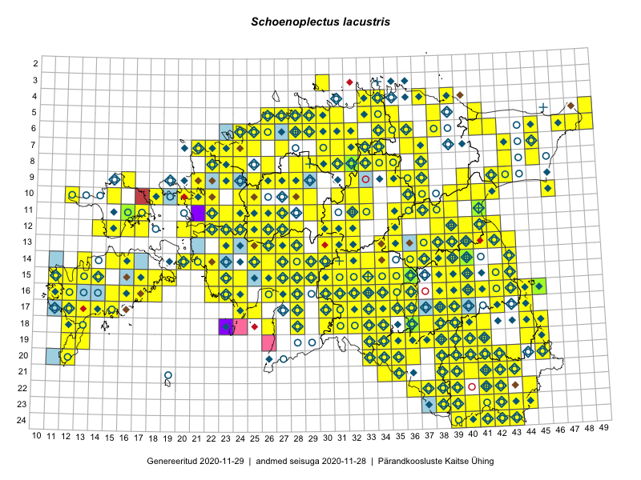

Schoenoplectus lacustris — järvkaisel
Cyperaceae :: Schoenoplectus lacustris (L.) Palla (906); Scirpus lacustris L. (21); Schoenoplectus lacustris f. submersum (10)

Kaart põhineb 1222 kirjel:
vaatlusi 802
herbaareksemplare 135
PKÜ kirjeid1 72
ELFi kirjeid2 213
Taime kaasaegsed ja ajaloolised leiukohad asuvad 387 ruudus.
Tingmärgid ja leidudega ruutude arvud periooditi uues (u) ja 2005 andmestikus (v)
| █ | vahemik | u3 | v4 |
|---|---|---|---|
| █ | 2006–2020 | 319 | – |
| ◆/◇ | 1971–2005 | 189 | 188 |
| ○ | 1921–1970 | 155 | 89 |
| + | kuni 1920 | 16 | 0 |
| × | hävinud | – | 0 |
| ? | kaheldav | – | 0 |
| Ruut | Leidja(d) | Leiuaeg | Kirje |
|---|---|---|---|
| 15-17 | Mari Reitalu, Sirje Azarov | 2020-08-27–2020-09-06 | ruut/ala: Schoenoplectus lacustris (L.) Palla |
| 15-14 | Mari Reitalu, Sirje Azarov | 2020-08-24 | ruut/ala: Schoenoplectus lacustris (L.) Palla |
| 17-33 | Peedu Saar | 2020-08-21 | ruut/ala: Schoenoplectus lacustris (L.) Palla |
| 18-33 | Ott Luuk, Jaak-Albert Metsoja | 2020-08-21 | ruut/ala: Schoenoplectus lacustris (L.) Palla |
| 16-36 | Peedu Saar | 2020-08-17 | ruut/ala: Schoenoplectus lacustris (L.) Palla |
| 15-35 | Peedu Saar | 2020-08-10–2020-08-17 | ruut/ala: Schoenoplectus lacustris (L.) Palla |
| 16-35 | Peedu Saar | 2020-08-10 | ruut/ala: Schoenoplectus lacustris (L.) Palla |
| 16-17 | Mari Reitalu, Sirje Azarov | 2020-08-08–2020-08-29 | ruut/ala: Schoenoplectus lacustris (L.) Palla |
| 17-13 | Mari Reitalu, Triin Reitalu | 2020-08-07 | ruut/ala: Schoenoplectus lacustris (L.) Palla |
| 16-17 | Mari Reitalu, Sirje Azarov | 2020-07-31 | ruut/ala: Schoenoplectus lacustris (L.) Palla |
| 07-45 | Toomas Kukk | 2020-07-29 | ruut/ala: Schoenoplectus lacustris (L.) Palla |
| 07-45 | Toomas Kukk | 2020-07-29 | ELF: 1944 |
| 07-36 | Jaan Spiegel | 2020-07-15 | ELF: 753 |
| 13-39 | Ulvi Selgis, Enn Selgis | 2020-07-13 | punkt: Schoenoplectus lacustris (L.) Palla |
| 16-15 | Mari Reitalu, Sirje Azarov, Anne Teigamägi | 2020-07-07 | ruut/ala: Schoenoplectus lacustris (L.) Palla |
| 17-15 | Mari Reitalu, Sirje Azarov | 2020-07-02 | ruut/ala: Schoenoplectus lacustris (L.) Palla |
| 10-28 | Kalev Tihkan | 2020-06-06 | punkt: Schoenoplectus lacustris (L.) Palla |
| 18-28 | Peedu Saar, Toomas Kukk | 2019-09-25 | ruut/ala: Schoenoplectus lacustris (L.) Palla |
| 20-45 | Peedu Saar, Ott Luuk | 2019-09-24 | ruut/ala: Schoenoplectus lacustris (L.) Palla |
| 10-22 | Toomas Kukk, Peedu Saar | 2019-09-19 | ruut/ala: Schoenoplectus lacustris (L.) Palla |
| 11-22 | Peedu Saar, Toomas Kukk | 2019-09-19 | ruut/ala: Schoenoplectus lacustris (L.) Palla |
| 10-46 | Peedu Saar, Timo Luhamäe | 2019-09-11 | ruut/ala: Schoenoplectus lacustris (L.) Palla |
| 10-40 | Toomas Kukk, Thea Kull | 2019-09-10 | ruut/ala: Schoenoplectus lacustris (L.) Palla |
| 08-43 | Ott Luuk, Meeli Mesipuu | 2019-09-10 | ruut/ala: Schoenoplectus lacustris (L.) Palla |
| 08-24 | Peedu Saar, Ott Luuk | 2019-09-05 | ruut/ala: Schoenoplectus lacustris (L.) Palla |
| 12-25 | Toomas Kukk, Peedu Saar | 2019-08-30 | punkt: Schoenoplectus lacustris (L.) Palla |
| 11-25 | Toomas Kukk, Peedu Saar | 2019-08-30 | ruut/ala: Schoenoplectus lacustris (L.) Palla |
| 15-28 | Toomas Kukk, Peedu Saar | 2019-08-29 | ruut/ala: Schoenoplectus lacustris (L.) Palla |
| 15-27 | Peedu Saar, Toomas Kukk | 2019-08-29 | ruut/ala: Schoenoplectus lacustris (L.) Palla |
| 15-29 | Peedu Saar, Toomas Kukk | 2019-08-29 | ruut/ala: Schoenoplectus lacustris (L.) Palla |
| 13-32 | Ott Luuk, Eerik Leibak | 2019-08-29 | ruut/ala: Schoenoplectus lacustris (L.) Palla |
| 13-31 | Ott Luuk, Eerik Leibak | 2019-08-29 | ruut/ala: Schoenoplectus lacustris (L.) Palla |
| 12-31 | Ott Luuk, Eerik Leibak | 2019-08-29 | ruut/ala: Schoenoplectus lacustris (L.) Palla |
| 14-32 | Meeli Mesipuu, Timo Luhamäe | 2019-08-29 | ruut/ala: Schoenoplectus lacustris (L.) Palla |
| 16-30 | Peedu Saar, Martin Tikk, Toomas Kukk | 2019-08-28 | ruut/ala: Schoenoplectus lacustris (L.) Palla |
| 14-31 | Ott Luuk, Eerik Leibak | 2019-08-28 | ruut/ala: Schoenoplectus lacustris (L.) Palla |
| 14-30 | Ott Luuk, Eerik Leibak | 2019-08-28 | ruut/ala: Schoenoplectus lacustris (L.) Palla |
| 15-30 | Meeli Mesipuu, Timo Luhamäe | 2019-08-28 | ruut/ala: Schoenoplectus lacustris (L.) Palla |
| 17-33 | Toomas Kukk, Peedu Saar, Martin Tikk | 2019-08-27 | ruut/ala: Schoenoplectus lacustris (L.) Palla |
| 19-41 | Thea Kull, Mari Reitalu | 2019-08-27 | ruut/ala: Schoenoplectus lacustris (L.) Palla |
| 17-35 | Peedu Saar, Martin Tikk, Toomas Kukk | 2019-08-27 | ruut/ala: Schoenoplectus lacustris (L.) Palla |
| 12-35 | Ott Luuk, Eerik Leibak | 2019-08-27 | ruut/ala: Schoenoplectus lacustris (L.) Palla |
| 16-35 | Meeli Mesipuu, Timo Luhamäe | 2019-08-27 | ruut/ala: Schoenoplectus lacustris (L.) Palla |
| 15-35 | Meeli Mesipuu, Timo Luhamäe | 2019-08-27 | ruut/ala: Schoenoplectus lacustris (L.) Palla |
| 16-33 | Mari Reitalu, Thea Kull | 2019-08-27 | ruut/ala: Schoenoplectus lacustris (L.) Palla |
| 16-12 | Sirje Azarov, Mari Reitalu | 2019-08-25 | ELF: 57 |
| 09-22 | Tõnu Ploompuu | 2019-08-20 | ELF: 3039 |
| 13-25 | Thea Kull | 2019-08-18 | ruut/ala: Schoenoplectus lacustris (L.) Palla |
| 13-25 | Thea Kull | 2019-08-18 | ELF: 9920 |
| 16-13 | Mari Reitalu, Sirje Azarov | 2019-08-15 | ELF: 21 |
| 11-36 | Peedu Saar | 2019-08-10 | ruut/ala: Schoenoplectus lacustris (L.) Palla |
| 07-34 | Toomas Kukk, Rein Kalamees, Kaur Maran | 2019-08-07 | ruut/ala: Schoenoplectus lacustris (L.) Palla |
| 04-33 | Ott Luuk, Jaak-Albert Metsoja | 2019-08-07 | ruut/ala: Schoenoplectus lacustris (L.) Palla |
| 19-41 | Thea Kull | 2019-08-06 | ruut/ala: Schoenoplectus lacustris (L.) Palla |
| 15-12 | Sirje Azarov, Mari Reitalu | 2019-08-06 | ELF: 2627 |
| 05-31 | Peedu Saar, Timo Luhamäe | 2019-08-06 | ruut/ala: Schoenoplectus lacustris (L.) Palla |
| 05-30 | Peedu Saar, Timo Luhamäe | 2019-08-06 | ruut/ala: Schoenoplectus lacustris (L.) Palla |
| 05-38 | Ott Luuk, Jaak-Albert Metsoja | 2019-08-06 | ruut/ala: Schoenoplectus lacustris (L.) Palla |
| 15-12 | Mari Reitalu, Sirje Azarov | 2019-08-06 | ruut/ala: Schoenoplectus lacustris (L.) Palla |
| 16-12 | Mari Reitalu, Sirje Azarov | 2019-08-06 | ELF: 60 |
| 06-32 | Toomas Kukk, Rein Kalamees | 2019-08-05 | ruut/ala: Schoenoplectus lacustris (L.) Palla |
| 07-31 | Peedu Saar, Timo Luhamäe | 2019-08-05 | ruut/ala: Schoenoplectus lacustris (L.) Palla |
| 07-36 | Ott Luuk, Jaak-Albert Metsoja | 2019-08-05 | ruut/ala: Schoenoplectus lacustris (L.) Palla |
| 17-15 | Sirje Azarov | 2019-08-04 | ELF: 9956 |
| 22-39 | Toomas Kukk, Peedu Saar | 2019-07-31 | ruut/ala: Schoenoplectus lacustris (L.) Palla |
| 12-40 | Peedu Saar | 2019-07-30 | ruut/ala: Schoenoplectus lacustris (L.) Palla |
| 13-32 | Eerik Leibak | 2019-07-20 | ELF: 1182 |
| 18-36 | Ott Luuk, Peedu Saar | 2019-07-16 | TAA0153062: Schoenoplectus lacustris (L.) Palla |
| 17-38 | Peedu Saar, Ott Luuk | 2019-07-15 | ruut/ala: Schoenoplectus lacustris (L.) Palla |
| 17-12 | Mari Reitalu | 2019-07-14 | ELF: 24782 |
| 23-38 | Peedu Saar, Timo Luhamäe | 2019-07-12 | ruut/ala: Schoenoplectus lacustris (L.) Palla |
| 21-43 | Ott Luuk, Tiit Hallikma | 2019-07-12 | ruut/ala: Schoenoplectus lacustris (L.) Palla |
| 23-39 | Peedu Saar, Timo Luhamäe | 2019-07-11 | ruut/ala: Schoenoplectus lacustris (L.) Palla |
| 23-43 | Ott Luuk, Tiit Hallikma | 2019-07-11 | ruut/ala: Schoenoplectus lacustris (L.) Palla |
| 19-41 | Meeli Mesipuu | 2019-07-11 | ruut/ala: Schoenoplectus lacustris (L.) Palla |
| 21-40 | Toomas Kukk, Indrek Tammekänd | 2019-07-10 | ruut/ala: Schoenoplectus lacustris (L.) Palla |
| 19-39 | Thea Kull | 2019-07-10 | ruut/ala: Schoenoplectus lacustris (L.) Palla |
| 22-37 | Peedu Saar, Timo Luhamäe | 2019-07-10 | ruut/ala: Schoenoplectus lacustris (L.) Palla |
| 22-38 | Peedu Saar, Timo Luhamäe | 2019-07-10 | ruut/ala: Schoenoplectus lacustris (L.) Palla |
| 20-45 | Ott Luuk, Tiit Hallikma | 2019-07-10 | ruut/ala: Schoenoplectus lacustris (L.) Palla |
| 20-43 | Ott Luuk, Tiit Hallikma | 2019-07-09 | ruut/ala: Schoenoplectus lacustris (L.) Palla |
| 13-40 | Peedu Saar, Ott Luuk | 2019-07-04 | ruut/ala: Schoenoplectus lacustris (L.) Palla |
| 20-12 | Sirje Azarov, Mari Reitalu | 2019-07-03 | ELF: 13409 |
| 20-12 | Sirje Azarov, Mari Reitalu | 2019-07-03 | ELF: 24780 |
| 11-16 | Eerik Leibak | 2019-07-03 | ruut/ala: Schoenoplectus lacustris (L.) Palla |
| 11-16 | Eerik Leibak | 2019-07-03 | TAA0148984: Schoenoplectus lacustris (L.) Palla |
| 11-16 | Eerik Leibak | 2019-07-03 | ELF: 24695 |
| 16-40 | Veljo Runnel | 2019-06-14 | punkt: Schoenoplectus lacustris (L.) Palla |
| 16-40 | Margit Hirv, Veljo Runnel | 2019-06-14 | punkt: Schoenoplectus lacustris (L.) Palla |
| 10-28 | Aat Sarv, Ott Luuk | 2019-06-14 | punkt: Schoenoplectus lacustris (L.) Palla |
| 16-43 | Peedu Saar | 2019-06-07 | ruut/ala: Schoenoplectus lacustris (L.) Palla |
| 16-45 | Ott Luuk | 2019-06-07 | ruut/ala: Schoenoplectus lacustris (L.) Palla |
| 16-45 | Ott Luuk | 2019-06-07 | TAA0153053: Schoenoplectus lacustris (L.) Palla |
| 15-26 | Indrek Tammekänd | 2019-06-05 | ruut/ala: Schoenoplectus lacustris (L.) Palla |
| 18-32 | Meeli Mesipuu | 2019-05-31 | ruut/ala: Schoenoplectus lacustris (L.) Palla |
| 16-28 | Indrek Tammekänd | 2019-05-29–2019-08-23 | ruut/ala: Schoenoplectus lacustris (L.) Palla |
| 11-41 | Toomas Kukk | 2019-05-28 | TAA0152672: Schoenoplectus lacustris (L.) Palla |
| 15-23 | Helle Mäemets, Kadi Palmik | 2018-08-30 | punkt: Schoenoplectus lacustris (L.) Palla |
| 13-32 | Eerik Leibak | 2018-08-18 | ruut/ala: Schoenoplectus lacustris (L.) Palla |
| 11-25 | Peedu Saar, Toomas Kukk, Ott Luuk, Kersti Tambets, Sten Mander | 2018-08-16 | ruut/ala: Schoenoplectus lacustris (L.) Palla |
| 11-29 | Peedu Saar, Toomas Kukk, Ott Luuk, Kersti Tambets, Sten Mander | 2018-08-16 | ruut/ala: Schoenoplectus lacustris (L.) Palla |
| 11-21 | Tõnu Ploompuu, Priit Kukk | 2018-08-13 | ELF: 234 |
| 17-12 | Triin Reitalu, Mari Reitalu | 2018-08-11 | punkt: Schoenoplectus lacustris (L.) Palla |
| 16-12 | Triin Reitalu, Mari Reitalu | 2018-08-09 | punkt: Schoenoplectus lacustris (L.) Palla |
| 16-14 | Mari Reitalu, Sirje Azarov | 2018-08-06 | ELF: 92 |
| 16-12 | Triin Reitalu, Mari Reitalu | 2018-08-03 | punkt: Schoenoplectus lacustris (L.) Palla |
| 16-12 | Triin Reitalu, Mari Reitalu | 2018-08-03 | punkt: Schoenoplectus lacustris (L.) Palla |
| 14-25 | Indrek Tammekänd | 2018-07-30 | ELF: 9991 |
| 14-25 | Indrek Tammekänd | 2018-07-30 | ELF: 20243 |
| 14-25 | Indrek Tammekänd | 2018-07-30 | ELF: 24581 |
| 07-37 | Alar Soppe | 2018-07-29 | ELF: 18388 |
| 20-12 | Mari Reitalu, Sirje Azarov | 2018-07-23 | ELF: 942 |
| 18-13 | Mari Reitalu, Sirje Azarov | 2018-07-23 | ELF: 2771 |
| 20-12 | Mari Reitalu, Sirje Azarov | 2018-07-23 | ELF: 23521 |
| 23-37 | Eerik Leibak | 2018-07-16 | ELF: 9960 |
| 20-12 | Mari Reitalu, Sirje Azarov | 2018-07-12 | ELF: 935 |
| 11-37 | Helle Mäemets, Kadi Palmik | 2018-07-11 | ruut/ala: Schoenoplectus lacustris (L.) Palla |
| 19-12 | Mari Reitalu, Sirje Azarov | 2018-07-10 | ruut/ala: Schoenoplectus lacustris (L.) Palla |
| 19-12 | Mari Reitalu, Sirje Azarov | 2018-07-10 | ELF: 1276 |
| 17-12 | Mari Reitalu, Sirje Azarov | 2018-07-10 | ELF: 1373 |
| 20-11 | Mari Reitalu, Sirje Azarov | 2018-07-10 | ELF: 1491 |
| 20-12 | Mari Reitalu, Sirje Azarov | 2018-07-10 | ELF: 2877 |
| 18-38 | Helle Mäemets, Kadi Palmik | 2018-07-05 | punkt: Schoenoplectus lacustris (L.) Palla |
| 18-38 | Helle Mäemets, Kadi Palmik | 2018-07-05 | punkt: Schoenoplectus lacustris (L.) Palla |
| 09-27 | Mari Reitalu, Sirje Azarov | 2018-07-01 | ruut/ala: Schoenoplectus lacustris (L.) Palla |
| 07-37 | Toomas Kukk, Peedu Saar | 2017-09-28 | ruut/ala: Schoenoplectus lacustris (L.) Palla |
| 09-40 | Toomas Kukk, Peedu Saar | 2017-09-28 | ruut/ala: Schoenoplectus lacustris (L.) Palla |
| 16-27 | Indrek Tammekänd | 2017-09-22 | ruut/ala: Schoenoplectus lacustris (L.) Palla |
| 16-11 | Mari Reitalu, Triin Reitalu | 2017-09-16 | punkt: Schoenoplectus lacustris (L.) Palla |
| 17-31 | Ott Luuk, Toomas Kukk, Sten Mander, Kersti Tambets, Timo Luhamäe | 2017-08-29 | ruut/ala: Schoenoplectus lacustris (L.) Palla |
| 16-11 | Mari Reitalu, Triin Reitalu | 2017-08-26 | ruut/ala: Schoenoplectus lacustris (L.) Palla |
| 12-41 | Ott Luuk, Peedu Saar | 2017-08-23 | ruut/ala: Schoenoplectus lacustris (L.) Palla |
| 14-43 | Peedu Saar, Ott Luuk | 2017-08-21 | ruut/ala: Schoenoplectus lacustris (L.) Palla |
| 15-28 | Peedu Saar, Timo Luhamäe | 2017-08-11 | ruut/ala: Schoenoplectus lacustris (L.) Palla |
| 14-27 | Ott Luuk, Indrek Tammekänd | 2017-08-11 | ruut/ala: Schoenoplectus lacustris (L.) Palla |
| 15-29 | Ilmar Uibopuu, Toomas Kukk | 2017-08-11 | ruut/ala: Schoenoplectus lacustris (L.) Palla |
| 11-25 | Toomas Kukk, Eerik Leibak | 2017-08-10 | ruut/ala: Schoenoplectus lacustris (L.) Palla |
| 05-26 | Peedu Saar, Timo Luhamäe | 2017-08-10 | ruut/ala: Schoenoplectus lacustris (L.) Palla |
| 07-23 | Mari Reitalu, Indrek Tammekänd | 2017-08-10 | ruut/ala: Schoenoplectus lacustris (L.) Palla |
| 04-37 | Katrit Karus, Tõnu Feldmann | 2017-08-10 | ruut/ala: Schoenoplectus lacustris (L.) Palla |
| 11-24 | Eerik Leibak, Toomas Kukk | 2017-08-10 | ruut/ala: Schoenoplectus lacustris (L.) Palla |
| 12-24 | Peedu Saar, Timo Luhamäe | 2017-08-09 | ruut/ala: Schoenoplectus lacustris (L.) Palla |
| 12-25 | Peedu Saar, Timo Luhamäe | 2017-08-09 | ruut/ala: Schoenoplectus lacustris (L.) Palla |
| 12-27 | Mari Reitalu, Eerik Leibak | 2017-08-09 | ruut/ala: Schoenoplectus lacustris (L.) Palla |
| 05-41 | Katrit Karus, Tõnu Feldmann | 2017-08-09 | ruut/ala: Schoenoplectus lacustris (L.) Palla |
| 09-28 | Ilmar Uibopuu, Kadri Kuusksalu, Toomas Kukk, Ott Luuk | 2017-08-09 | ruut/ala: Schoenoplectus lacustris (L.) Palla |
| 08-26 | Toomas Kukk, Ilmar Uibopuu, Kadri Kuusksalu | 2017-08-08 | ruut/ala: Schoenoplectus lacustris (L.) Palla |
| 07-27 | Peedu Saar, Timo Luhamäe | 2017-08-08 | ruut/ala: Schoenoplectus lacustris (L.) Palla |
| 09-26 | Meeli Mesipuu, Indrek Tammekänd | 2017-08-08 | ruut/ala: Schoenoplectus lacustris (L.) Palla |
| 13-37 | Toomas Kukk, Ilmar Uibopuu | 2017-08-07 | ruut/ala: Schoenoplectus lacustris (L.) Palla |
| 14-34 | Peedu Saar, Timo Luhamäe | 2017-08-07 | ruut/ala: Schoenoplectus lacustris (L.) Palla |
| 13-34 | Peedu Saar, Timo Luhamäe | 2017-08-07 | ruut/ala: Schoenoplectus lacustris (L.) Palla |
| 12-32 | Ott Luuk, Thea Kull | 2017-08-07 | ruut/ala: Schoenoplectus lacustris (L.) Palla |
| 19-44 | Helle Mäemets, Kadi Palmik | 2017-08-02 | ruut/ala: Schoenoplectus lacustris (L.) Palla |
| 22-44 | Helle Mäemets, Kadi Palmik | 2017-08-01 | ruut/ala: Schoenoplectus lacustris (L.) Palla |
| 22-36 | Ott Luuk, Peedu Saar | 2017-07-28 | ruut/ala: Schoenoplectus lacustris (L.) Palla |
| 22-39 | Ott Luuk, Peedu Saar | 2017-07-27 | ruut/ala: Schoenoplectus lacustris (L.) Palla |
| 19-38 | Peedu Saar, Ott Luuk | 2017-07-25 | ruut/ala: Schoenoplectus lacustris (L.) Palla |
| 20-38 | Ott Luuk, Peedu Saar | 2017-07-25 | ruut/ala: Schoenoplectus lacustris (L.) Palla |
| 12-42 | Peedu Saar | 2017-07-24 | ruut/ala: Schoenoplectus lacustris (L.) Palla |
| 13-43 | Peedu Saar | 2017-07-24 | ruut/ala: Schoenoplectus lacustris (L.) Palla |
| 06-48 | Toomas Kukk | 2017-07-21 | ruut/ala: Schoenoplectus lacustris (L.) Palla |
| 06-49 | Toomas Kukk | 2017-07-21 | ruut/ala: Schoenoplectus lacustris (L.) Palla |
| 06-34 | Peedu Saar, Ott Luuk | 2017-07-19 | ruut/ala: Schoenoplectus lacustris (L.) Palla |
| 06-35 | Ott Luuk, Peedu Saar | 2017-07-19 | ruut/ala: Schoenoplectus lacustris (L.) Palla |
| 08-26 | Helle Mäemets, Kadi Palmik | 2017-07-16 | ruut/ala: Schoenoplectus lacustris (L.) Palla |
| 08-26 | Helle Mäemets, Kadi Palmik | 2017-07-16 | ruut/ala: Schoenoplectus lacustris (L.) Palla |
| 07-22 | Helle Mäemets, Kadi Palmik | 2017-07-15 | ruut/ala: Schoenoplectus lacustris (L.) Palla |
| 07-21 | Helle Mäemets, Kadi Palmik | 2017-07-15 | ruut/ala: Schoenoplectus lacustris (L.) Palla |
| 07-22 | Helle Mäemets, Kadi Palmik | 2017-07-15 | ruut/ala: Schoenoplectus lacustris (L.) Palla |
| 12-35 | Helle Mäemets, Kadi Palmik | 2017-07-14 | ruut/ala: Schoenoplectus lacustris (L.) Palla |
| 11-30 | Helle Mäemets, Kadi Palmik | 2017-07-14 | ruut/ala: Schoenoplectus lacustris (L.) Palla |
| 09-26 | Helle Mäemets, Kadi Palmik | 2017-07-14 | ruut/ala: Schoenoplectus lacustris (L.) Palla |
| 16-12 | Triin Reitalu, Mari Reitalu | 2017-07-10 | punkt: Schoenoplectus lacustris (L.) Palla |
| 18-37 | Helle Mäemets, Kadi Palmik | 2017-07-10 | ruut/ala: Schoenoplectus lacustris (L.) Palla |
| 08-34 | Tõnu Feldmann, Katrit Karus | 2017-07-07 | ruut/ala: Schoenoplectus lacustris (L.) Palla |
| 21-38 | Helle Mäemets, Kadi Palmik | 2017-07-07 | ruut/ala: Schoenoplectus lacustris (L.) Palla |
| 19-37 | Helle Mäemets, Kadi Palmik | 2017-07-07 | ruut/ala: Schoenoplectus lacustris (L.) Palla |
| 08-45 | Tõnu Feldmann, Katrit Karus | 2017-07-06 | ruut/ala: Schoenoplectus lacustris (L.) Palla |
| 10-32 | Tõnu Feldmann, Katrit Karus | 2017-07-05 | ruut/ala: Schoenoplectus lacustris (L.) Palla |
| 08-29 | Tõnu Feldmann, Katrit Karus | 2017-07-05 | ruut/ala: Schoenoplectus lacustris (L.) Palla |
| 10-32 | Katrit Karus, Tõnu Feldmann | 2017-07-05 | ruut/ala: Schoenoplectus lacustris (L.) Palla |
| 18-40 | Helle Mäemets, Kadi Palmik | 2017-07-05 | ruut/ala: Schoenoplectus lacustris (L.) Palla |
| 18-40 | Helle Mäemets, Kadi Palmik | 2017-07-05 | ruut/ala: Schoenoplectus lacustris (L.) Palla |
| 10-37 | Tõnu Feldmann, Katrit Karus | 2017-07-04 | ruut/ala: Schoenoplectus lacustris (L.) Palla |
| 08-35 | Katrit Karus, Tõnu Feldmann | 2017-07-04 | ruut/ala: Schoenoplectus lacustris (L.) Palla |
| 11-39 | Katrit Karus, Tõnu Feldmann | 2017-07-04 | ruut/ala: Schoenoplectus lacustris (L.) Palla |
| 16-34 | Tõnu Feldmann, Katrit Karus | 2017-07-03 | ruut/ala: Schoenoplectus lacustris (L.) Palla |
| 16-34 | Tõnu Feldmann, Katrit Karus | 2017-07-03 | punkt: Schoenoplectus lacustris (L.) Palla |
| 11-33 | Tõnu Feldmann, Katrit Karus | 2017-07-03 | ruut/ala: Schoenoplectus lacustris (L.) Palla |
| 14-33 | Tõnu Feldmann, Katrit Karus | 2017-07-03 | ruut/ala: Schoenoplectus lacustris (L.) Palla |
| 10-33 | Katrit Karus, Tõnu Feldmann | 2017-07-03 | ruut/ala: Schoenoplectus lacustris (L.) Palla |
| 18-32 | Helle Mäemets, Kadi Palmik | 2017-07-03 | ruut/ala: Schoenoplectus lacustris (L.) Palla |
| 18-33 | Helle Mäemets, Kadi Palmik | 2017-07-03 | ruut/ala: Schoenoplectus lacustris (L.) Palla |
| 17-28 | Helle Mäemets, Kadi Palmik | 2017-06-28 | ruut/ala: Schoenoplectus lacustris (L.) Palla |
| 18-28 | Helle Mäemets, Kadi Palmik | 2017-06-28 | ruut/ala: Schoenoplectus lacustris (L.) Palla |
| 18-39 | Peedu Saar | 2017-06-25 | punkt: Schoenoplectus lacustris (L.) Palla |
| 16-34 | Thea Kull, Ott Luuk | 2017-06-22 | ruut/ala: Schoenoplectus lacustris (L.) Palla |
| 16-35 | Ott Luuk, Thea Kull | 2017-06-22 | ruut/ala: Schoenoplectus lacustris (L.) Palla |
| 16-36 | Ott Luuk, Thea Kull | 2017-06-21 | ruut/ala: Schoenoplectus lacustris (L.) Palla |
| 15-35 | Ott Luuk, Peedu Saar | 2017-06-20 | ruut/ala: Schoenoplectus lacustris (L.) Palla |
| 18-30 | Helle Mäemets, Kadi Palmik | 2017-06-17 | ruut/ala: Schoenoplectus lacustris (L.) Palla |
| 14-13 | Toomas Kukk, Meeli Mesipuu, Mari Reitalu | 2016-10-06 | ruut/ala: Schoenoplectus lacustris (L.) Palla |
| 15-13 | Meeli Mesipuu, Toomas Kukk, Mari Reitalu | 2016-10-06 | ruut/ala: Schoenoplectus lacustris (L.) Palla |
| 07-32 | Peedu Saar, Ott Luuk | 2016-09-28 | ruut/ala: Schoenoplectus lacustris (L.) Palla |
| 08-32 | Ott Luuk, Peedu Saar | 2016-09-28 | ruut/ala: Schoenoplectus lacustris (L.) Palla |
| 09-32 | Toomas Kukk, Peedu Saar | 2016-09-16 | ruut/ala: Schoenoplectus lacustris (L.) Palla |
| 07-30 | Toomas Kukk, Peedu Saar | 2016-09-09 | ruut/ala: Schoenoplectus lacustris (L.) Palla |
| 06-31 | Peedu Saar, Toomas Kukk | 2016-09-08 | ruut/ala: Schoenoplectus lacustris (L.) Palla |
| 10-46 | Meeli Mesipuu, Karin Kikas | 2016-08-31 | ruut/ala: Schoenoplectus lacustris (L.) Palla |
| 06-30 | Toomas Kukk, Sander Laherand | 2016-08-30 | ruut/ala: Schoenoplectus lacustris (L.) Palla |
| 05-29 | Toomas Kukk, Sander Laherand | 2016-08-29 | ruut/ala: Schoenoplectus lacustris (L.) Palla |
| 06-29 | Sander Laherand, Toomas Kukk | 2016-08-29 | ruut/ala: Schoenoplectus lacustris (L.) Palla |
| 17-44 | Peedu Saar | 2016-08-24 | ruut/ala: Schoenoplectus lacustris (L.) Palla |
| 20-36 | Thea Kull, Ott Luuk | 2016-08-23 | ruut/ala: Schoenoplectus lacustris (L.) Palla |
| 18-38 | Ott Luuk, Thea Kull | 2016-08-23 | ruut/ala: Schoenoplectus lacustris (L.) Palla |
| 14-20 | Mari Reitalu, Sirje Azarov | 2016-08-17 | ruut/ala: Schoenoplectus lacustris (L.) Palla |
| 15-17 | Peedu Saar, Toomas Kukk | 2016-08-13 | ruut/ala: Schoenoplectus lacustris (L.) Palla |
| 12-15 | Toomas Kukk, Meeli Mesipuu | 2016-08-10 | ruut/ala: Schoenoplectus lacustris (L.) Palla |
| 10-15 | Toomas Kukk, Sander Laherand, Nele Jõessar | 2016-08-09 | ruut/ala: Schoenoplectus lacustris (L.) Palla |
| 09-40 | Ott Luuk, Eerik Leibak | 2016-08-09 | ruut/ala: Schoenoplectus lacustris (L.) Palla |
| 14-15 | Mari Reitalu, Sirje Azarov | 2016-08-09 | ruut/ala: Schoenoplectus lacustris (L.) Palla |
| 11-16 | Toomas Kukk, Thea Kull | 2016-08-08 | ruut/ala: Schoenoplectus lacustris (L.) Palla |
| 16-18 | Mari Reitalu, Sirje Azarov | 2016-08-08 | ruut/ala: Schoenoplectus lacustris (L.) Palla |
| 20-12 | Mari Reitalu, Sirje Azarov | 2016-08-08 | ruut/ala: Schoenoplectus lacustris (L.) Palla |
| 20-43 | Peedu Saar, Thea Kull | 2016-08-05 | ruut/ala: Schoenoplectus lacustris (L.) Palla |
| 09-42 | Ott Luuk, Eerik Leibak | 2016-08-05 | ruut/ala: Schoenoplectus lacustris (L.) Palla |
| 10-41 | Ott Luuk, Eerik Leibak | 2016-08-04 | ruut/ala: Schoenoplectus lacustris (L.) Palla |
| 10-42 | Ott Luuk, Eerik Leibak | 2016-08-04 | ruut/ala: Schoenoplectus lacustris (L.) Palla |
| 10-39 | Ott Luuk, Eerik Leibak | 2016-08-03 | ruut/ala: Schoenoplectus lacustris (L.) Palla |
| 18-13 | Mari Reitalu, Sirje Azarov | 2016-07-31 | ruut/ala: Schoenoplectus lacustris (L.) Palla |
| 19-13 | Mari Reitalu, Sirje Azarov | 2016-07-31 | ruut/ala: Schoenoplectus lacustris (L.) Palla |
| 15-36 | Karin Kaljund, Kaire Lanno | 2016-07-29 | ruut/ala: Schoenoplectus lacustris (L.) Palla |
| 09-43 | Hannes Pehlak, Ott Luuk | 2016-07-29 | ruut/ala: Schoenoplectus lacustris (L.) Palla |
| 04-39 | Hannes Pehlak, Toomas Kukk, Susanna Vain | 2016-07-28 | ruut/ala: Schoenoplectus lacustris (L.) Palla |
| 07-36 | Thea Kull, Timo Luhamäe | 2016-07-27 | ruut/ala: Schoenoplectus lacustris (L.) Palla |
| 05-35 | Peedu Saar, Liina Oja, Susanna Vain | 2016-07-27 | ruut/ala: Schoenoplectus lacustris (L.) Palla |
| 05-33 | Ott Luuk, Hannes Pehlak | 2016-07-27 | ruut/ala: Schoenoplectus lacustris (L.) Palla |
| 05-34 | Ott Luuk, Hannes Pehlak | 2016-07-27 | ruut/ala: Schoenoplectus lacustris (L.) Palla |
| 07-37 | Meeli Mesipuu, Tiit Hallikma | 2016-07-27 | ruut/ala: Schoenoplectus lacustris (L.) Palla |
| 16-41 | Kersti Püssa, Rein Kalamees | 2016-07-27 | ruut/ala: Schoenoplectus lacustris (L.) Palla |
| 09-35 | Toomas Kukk, Tiit Hallikma | 2016-07-25 | ruut/ala: Schoenoplectus lacustris (L.) Palla |
| 09-36 | Peedu Saar, Liina Oja, Susanna Vain | 2016-07-25 | ruut/ala: Schoenoplectus lacustris (L.) Palla |
| 10-37 | Peedu Saar, Liina Oja, Susanna Vain | 2016-07-25 | ruut/ala: Schoenoplectus lacustris (L.) Palla |
| 06-38 | Hannes Pehlak, Thea Kull | 2016-07-25 | ruut/ala: Schoenoplectus lacustris (L.) Palla |
| 08-31 | Erkki Otsman, Sergei Smirnov | 2016-07-24 | ruut/ala: Schoenoplectus lacustris (L.) Palla |
| 13-38 | Eeva-Maria Jeletsky, Tarmo Niitla | 2016-07-23 | ruut/ala: Schoenoplectus lacustris (L.) Palla |
| 14-37 | Eeva-Maria Jeletsky, Tarmo Niitla | 2016-07-23 | ruut/ala: Schoenoplectus lacustris (L.) Palla |
| 11-33 | Tõnu Ploompuu, Marko Veinbergs, Eerik Leibak | 2016-07-22 | ruut/ala: Schoenoplectus lacustris (L.) Palla |
| 10-31 | Toivo Sepp, Peedu Saar | 2016-07-22 | ruut/ala: Schoenoplectus lacustris (L.) Palla |
| 12-35 | Ott Luuk, Hannes Pehlak | 2016-07-22 | ruut/ala: Schoenoplectus lacustris (L.) Palla |
| 13-35 | Ott Luuk, Hannes Pehlak | 2016-07-22 | ruut/ala: Schoenoplectus lacustris (L.) Palla |
| 16-42 | Kaire Lanno, Karin Kaljund | 2016-07-22 | ruut/ala: Schoenoplectus lacustris (L.) Palla |
| 13-37 | Eeva-Maria Jeletsky, Tarmo Niitla | 2016-07-22 | ruut/ala: Schoenoplectus lacustris (L.) Palla |
| 12-31 | Aat Sarv, Indrek Tammekänd | 2016-07-22 | ruut/ala: Schoenoplectus lacustris (L.) Palla |
| 12-30 | Aat Sarv, Indrek Tammekänd | 2016-07-22 | ruut/ala: Schoenoplectus lacustris (L.) Palla |
| 13-30 | Tõnu Ploompuu, Hannes Pehlak, Marko Veinbergs | 2016-07-21 | ruut/ala: Schoenoplectus lacustris (L.) Palla |
| 14-32 | Toomas Kukk, Liina Oja | 2016-07-21 | ruut/ala: Schoenoplectus lacustris (L.) Palla |
| 15-32 | Toomas Kukk, Liina Oja | 2016-07-21 | ruut/ala: Schoenoplectus lacustris (L.) Palla |
| 14-31 | Toivo Sepp, Oliver Parrest | 2016-07-21 | ruut/ala: Schoenoplectus lacustris (L.) Palla |
| 12-32 | Thea Kull, Raivo Kalle, Susanna Vain | 2016-07-21 | ruut/ala: Schoenoplectus lacustris (L.) Palla |
| 15-30 | Sirje Azarov, Meeli Mesipuu | 2016-07-21 | ruut/ala: Schoenoplectus lacustris (L.) Palla |
| 17-39 | Rein Kalamees, Kersti Püssa | 2016-07-21 | ruut/ala: Schoenoplectus lacustris (L.) Palla |
| 14-33 | Ott Luuk, Indrek Tammekänd | 2016-07-21 | ruut/ala: Schoenoplectus lacustris (L.) Palla |
| 14-30 | Hannes Pehlak, Tõnu Ploompuu, Marko Veinbergs | 2016-07-21 | ruut/ala: Schoenoplectus lacustris (L.) Palla |
| 07-27 | Erkki Otsman, Sergei Smirnov | 2016-07-21 | ruut/ala: Schoenoplectus lacustris (L.) Palla |
| 15-28 | Elle Rajandu, Tiit Hallikma | 2016-07-21 | ruut/ala: Schoenoplectus lacustris (L.) Palla |
| 15-29 | Elle Rajandu, Tiit Hallikma | 2016-07-21 | ruut/ala: Schoenoplectus lacustris (L.) Palla |
| 11-32 | Aat Sarv, Jaak-Albert Metsoja | 2016-07-21 | ruut/ala: Schoenoplectus lacustris (L.) Palla |
| 17-32 | Toomas Kukk, Eerik Leibak | 2016-07-20 | ruut/ala: Schoenoplectus lacustris (L.) Palla |
| 17-33 | Toomas Kukk, Eerik Leibak | 2016-07-20 | ruut/ala: Schoenoplectus lacustris (L.) Palla |
| 17-28 | Ott Luuk, Liina Oja | 2016-07-20 | ruut/ala: Schoenoplectus lacustris (L.) Palla |
| 16-28 | Ott Luuk, Liina Oja | 2016-07-20 | ruut/ala: Schoenoplectus lacustris (L.) Palla |
| 17-30 | Oliver Parrest, Timo Luhamäe | 2016-07-20 | ruut/ala: Schoenoplectus lacustris (L.) Palla |
| 17-31 | Oliver Parrest, Timo Luhamäe | 2016-07-20 | ruut/ala: Schoenoplectus lacustris (L.) Palla |
| 17-35 | Meeli Mesipuu, Toivo Sepp, Susanna Vain | 2016-07-20 | ruut/ala: Schoenoplectus lacustris (L.) Palla |
| 16-34 | Jaak-Albert Metsoja, Lena Neuenkamp, Sirje Azarov | 2016-07-20 | ruut/ala: Schoenoplectus lacustris (L.) Palla |
| 16-35 | Jaak-Albert Metsoja, Lena Neuenkamp, Sirje Azarov | 2016-07-20 | ruut/ala: Schoenoplectus lacustris (L.) Palla |
| 16-30 | Hannes Pehlak, Thea Kull | 2016-07-20 | ruut/ala: Schoenoplectus lacustris (L.) Palla |
| 16-31 | Elle Rajandu, Indrek Tammekänd | 2016-07-20 | ruut/ala: Schoenoplectus lacustris (L.) Palla |
| 16-32 | Elle Rajandu, Indrek Tammekänd | 2016-07-20 | ruut/ala: Schoenoplectus lacustris (L.) Palla |
| 18-31 | Toomas Kukk, Hannes Pehlak | 2016-07-19 | ruut/ala: Schoenoplectus lacustris (L.) Palla |
| 18-31 | Toomas Kukk, Hannes Pehlak | 2016-07-19 | ruut/ala: Schoenoplectus lacustris (L.) Palla |
| 18-32 | Toomas Kukk, Hannes Pehlak | 2016-07-19 | ruut/ala: Schoenoplectus lacustris (L.) Palla |
| 11-30 | Erkki Otsman, Sergei Smirnov | 2016-07-18–2016-07-25 | ruut/ala: Schoenoplectus lacustris (L.) Palla |
| 21-34 | Toomas Kukk, Susanna Vain, Raivo Kalle | 2016-07-18 | ruut/ala: Schoenoplectus lacustris (L.) Palla |
| 08-31 | Toivo Sepp, Peedu Saar | 2016-07-18 | ruut/ala: Schoenoplectus lacustris (L.) Palla |
| 18-26 | Meeli Mesipuu, Timo Luhamäe | 2016-07-18 | ruut/ala: Schoenoplectus lacustris (L.) Palla |
| 08-28 | Erkki Otsman, Sergei Smirnov | 2016-07-17 | ruut/ala: Schoenoplectus lacustris (L.) Palla |
| 10-18 | Eeva-Maria Jeletsky, Tarmo Niitla | 2016-07-14 | ruut/ala: Schoenoplectus lacustris (L.) Palla |
| 08-37 | Mari Reitalu, Triin Reitalu | 2016-07-12 | ruut/ala: Schoenoplectus lacustris (L.) Palla |
| 09-37 | Mari Reitalu, Triin Reitalu | 2016-07-11 | ruut/ala: Schoenoplectus lacustris (L.) Palla |
| 13-28 | Thea Kull, Tiit Hallikma | 2016-07-08 | ruut/ala: Schoenoplectus lacustris (L.) Palla |
| 12-20 | Rein Kalamees, Liina Oja | 2016-07-08 | ruut/ala: Schoenoplectus lacustris (L.) Palla |
| 13-27 | Peedu Saar, Timo Luhamäe | 2016-07-08 | ruut/ala: Schoenoplectus lacustris (L.) Palla |
| 14-27 | Peedu Saar, Timo Luhamäe | 2016-07-08 | ruut/ala: Schoenoplectus lacustris (L.) Palla |
| 11-27 | Meeli Mesipuu | 2016-07-08 | ruut/ala: Schoenoplectus lacustris (L.) Palla |
| 14-26 | Maret Gerz, Liina Oja | 2016-07-08 | ruut/ala: Schoenoplectus lacustris (L.) Palla |
| 13-26 | Maret Gerz, Liina Oja | 2016-07-08 | ruut/ala: Schoenoplectus lacustris (L.) Palla |
| 06-24 | Thea Kull, Helle Mäemets | 2016-07-07 | ruut/ala: Schoenoplectus lacustris (L.) Palla |
| 17-25 | Tiit Hallikma, Tõnu Ploompuu | 2016-07-06 | ruut/ala: Schoenoplectus lacustris (L.) Palla |
| 09-26 | Thea Kull, Oliver Parrest | 2016-07-06 | ruut/ala: Schoenoplectus lacustris (L.) Palla |
| 10-25 | Sirje Azarov, Meeli Mesipuu | 2016-07-06 | ruut/ala: Schoenoplectus lacustris (L.) Palla |
| 09-23 | Jaak-Albert Metsoja, Mari Metsoja | 2016-07-06 | ruut/ala: Schoenoplectus lacustris (L.) Palla |
| 10-24 | Helle Mäemets, Tiina Elvisto | 2016-07-06 | ruut/ala: Schoenoplectus lacustris (L.) Palla |
| 11-24 | Helle Mäemets, Tiina Elvisto | 2016-07-06 | ruut/ala: Schoenoplectus lacustris (L.) Palla |
| 11-23 | Aat Sarv, Maret Gerz | 2016-07-06 | ruut/ala: Schoenoplectus lacustris (L.) Palla |
| 13-23 | Thea Kull, Eerik Leibak | 2016-07-05 | ruut/ala: Schoenoplectus lacustris (L.) Palla |
| 12-24 | Sirje Azarov, Meeli Mesipuu | 2016-07-05 | ruut/ala: Schoenoplectus lacustris (L.) Palla |
| 12-23 | Mari Reitalu, Oliver Parrest | 2016-07-05 | ruut/ala: Schoenoplectus lacustris (L.) Palla |
| 12-27 | Jaak-Albert Metsoja, Mari Metsoja | 2016-07-05 | ruut/ala: Schoenoplectus lacustris (L.) Palla |
| 12-26 | Jaak-Albert Metsoja, Mari Metsoja | 2016-07-05 | ruut/ala: Schoenoplectus lacustris (L.) Palla |
| 07-25 | Helle Mäemets, Tiina Elvisto | 2016-07-05 | ruut/ala: Schoenoplectus lacustris (L.) Palla |
| 08-30 | Rein Kalamees, Liina Oja | 2016-07-04 | ruut/ala: Schoenoplectus lacustris (L.) Palla |
| 15-22 | Meeli Mesipuu, Sirje Azarov | 2016-07-04 | ruut/ala: Schoenoplectus lacustris (L.) Palla |
| 08-26 | Jaak-Albert Metsoja, Mari Metsoja | 2016-07-04 | ruut/ala: Schoenoplectus lacustris (L.) Palla |
| 16-26 | Aat Sarv, Maret Gerz | 2016-07-04 | ruut/ala: Schoenoplectus lacustris (L.) Palla |
| 08-23 | Jaak-Albert Metsoja, Mari Metsoja | 2016-07-02 | ruut/ala: Schoenoplectus lacustris (L.) Palla |
| 08-32 | Rein Kalamees, Kersti Püssa | 2016-07-01 | ruut/ala: Schoenoplectus lacustris (L.) Palla |
| 14-40 | Karin Kikas, Elle Rajandu | 2016-07-01 | ruut/ala: Schoenoplectus lacustris (L.) Palla |
| 14-39 | Karin Kikas, Elle Rajandu | 2016-07-01 | ruut/ala: Schoenoplectus lacustris (L.) Palla |
| 10-36 | Karin Kikas, Elle Rajandu | 2016-06-30 | ruut/ala: Schoenoplectus lacustris (L.) Palla |
| 07-36 | Karin Kikas, Elle Rajandu | 2016-06-27 | ruut/ala: Schoenoplectus lacustris (L.) Palla |
| 12-40 | Eeva-Maria Jeletsky, Tarmo Niitla | 2016-06-26 | ruut/ala: Schoenoplectus lacustris (L.) Palla |
| 16-27 | Tiit Hallikma, Tõnu Ploompuu | 2016-06-20 | ruut/ala: Schoenoplectus lacustris (L.) Palla |
| 14-38 | Kai Rünk, Ülle Jõgar, Illi Tarmu | 2016-06-20 | ruut/ala: Schoenoplectus lacustris (L.) Palla |
| 19-45 | Toomas Kukk, Tiit Hallikma | 2016-06-17 | ruut/ala: Schoenoplectus lacustris (L.) Palla |
| 18-45 | Toomas Kukk, Tiit Hallikma | 2016-06-17 | ruut/ala: Schoenoplectus lacustris (L.) Palla |
| 21-39 | Rein Kalamees, Eerik Leibak | 2016-06-17 | ruut/ala: Schoenoplectus lacustris (L.) Palla |
| 20-39 | Rein Kalamees, Eerik Leibak | 2016-06-17 | ruut/ala: Schoenoplectus lacustris (L.) Palla |
| 22-41 | Toomas Kukk, Tiit Hallikma | 2016-06-16 | ruut/ala: Schoenoplectus lacustris (L.) Palla |
| 22-39 | Meeli Mesipuu, Timo Luhamäe | 2016-06-16 | ruut/ala: Schoenoplectus lacustris (L.) Palla |
| 22-37 | Jaak-Albert Metsoja, Mari Metsoja | 2016-06-16 | ruut/ala: Schoenoplectus lacustris (L.) Palla |
| 23-44 | Rein Kalamees, Eerik Leibak | 2016-06-15 | ruut/ala: Schoenoplectus lacustris (L.) Palla |
| 05-49 | Erkki Otsman, Sergei Smirnov | 2016-06-15 | ruut/ala: Schoenoplectus lacustris (L.) Palla |
| 24-42 | Rein Kalamees, Eerik Leibak | 2016-06-14 | ruut/ala: Schoenoplectus lacustris (L.) Palla |
| 16-40 | Kai Rünk, Ülle Jõgar, Illi Tarmu | 2016-06-14 | ruut/ala: Schoenoplectus lacustris (L.) Palla |
| 18-40 | Toomas Kukk, Tiit Hallikma, Johannes Kõdar | 2016-06-13 | ruut/ala: Schoenoplectus lacustris (L.) Palla |
| 17-44 | Maret Gerz, Liina Oja | 2016-06-13 | ruut/ala: Schoenoplectus lacustris (L.) Palla |
| 17-42 | Jaak-Albert Metsoja, Mari Metsoja | 2016-06-13 | ruut/ala: Schoenoplectus lacustris (L.) Palla |
| 17-30 | Ulvi Selgis | 2016-06-12 | ruut/ala: Schoenoplectus lacustris (L.) Palla |
| 13-43 | Kai Rünk, Ülle Jõgar, Illi Tarmu | 2016-06-10 | ruut/ala: Schoenoplectus lacustris (L.) Palla |
| 12-38 | Eeva-Maria Jeletsky, Tarmo Niitla | 2016-06-10 | ruut/ala: Schoenoplectus lacustris (L.) Palla |
| 11-38 | Eeva-Maria Jeletsky, Tarmo Niitla | 2016-06-09 | ruut/ala: Schoenoplectus lacustris (L.) Palla |
| 12-41 | Eeva-Maria Jeletsky, Tarmo Niitla | 2016-06-04 | ruut/ala: Schoenoplectus lacustris (L.) Palla |
| 07-27 | Thea Kull, Meeli Mesipuu | 2016-06-03 | ruut/ala: Schoenoplectus lacustris (L.) Palla |
| 14-33 | Aat Sarv | 2016-04-25 | ruut/ala: Schoenoplectus lacustris (L.) Palla |
| 16-12 | Mari Reitalu | 2015-09-04 | ruut/ala: Schoenoplectus lacustris (L.) Palla |
| 09-16 | Anonymous | 2015-08-31 | punkt: Schoenoplectus lacustris (L.) Palla |
| 09-42 | Tõnu Ploompuu | 2015-08-26–2015-08-29 | ruut/ala: Schoenoplectus lacustris (L.) Palla |
| 12-22 | Ott Luuk, Peedu Saar | 2015-08-24 | ruut/ala: Schoenoplectus lacustris (L.) Palla |
| 12-23 | Meeli Mesipuu, Maret Gerz | 2015-08-24 | ruut/ala: Schoenoplectus lacustris (L.) Palla |
| 11-41 | Peedu Saar | 2015-08-22 | ruut/ala: Schoenoplectus lacustris (L.) Palla |
| 11-22 | Tõnu Ploompuu | 2015-08-21–2015-08-23 | ruut/ala: Schoenoplectus lacustris (L.) Palla |
| 10-21 | Tõnu Ploompuu | 2015-08-21–2015-08-23 | ruut/ala: Schoenoplectus lacustris (L.) Palla |
| 10-29 | Ott Luuk, Toivo Sepp | 2015-08-21 | ruut/ala: Schoenoplectus lacustris (L.) Palla |
| 11-29 | Ott Luuk, Toivo Sepp | 2015-08-20 | ruut/ala: Schoenoplectus lacustris (L.) Palla |
| 22-38 | Kadi Palmik, Helle Mäemets | 2015-08-19 | ruut/ala: Schoenoplectus lacustris (L.) Palla |
| 11-38 | Peedu Saar, Eerik Leibak | 2015-08-18 | ruut/ala: Schoenoplectus lacustris (L.) Palla |
| 09-32 | Ott Luuk, Toivo Sepp | 2015-08-18 | ruut/ala: Schoenoplectus lacustris (L.) Palla |
| 09-25 | Meelis Muuga, Tõnu Ploompuu | 2015-08-17 | ruut/ala: Schoenoplectus lacustris (L.) Palla |
| 12-40 | Peedu Saar, Eerik Leibak | 2015-08-16 | ruut/ala: Schoenoplectus lacustris (L.) Palla |
| 12-39 | Peedu Saar, Eerik Leibak | 2015-08-16 | ruut/ala: Schoenoplectus lacustris (L.) Palla |
| 09-36 | Jana-Maria Habicht, Ester Valdvee | 2015-08-15 | ruut/ala: Schoenoplectus lacustris (L.) Palla |
| 13-42 | Meeli Mesipuu, Thea Kull | 2015-08-14 | ruut/ala: Schoenoplectus lacustris (L.) Palla |
| 14-13 | Mari Reitalu, Triin Reitalu | 2015-08-14 | ruut/ala: Schoenoplectus lacustris (L.) Palla |
| 17-34 | Kadi Palmik, Helle Mäemets | 2015-08-14 | ruut/ala: Schoenoplectus lacustris (L.) Palla |
| 15-33 | Kadi Palmik, Helle Mäemets | 2015-08-14 | ruut/ala: Schoenoplectus lacustris (L.) Palla |
| 15-33 | Kadi Palmik, Helle Mäemets | 2015-08-14 | ruut/ala: Schoenoplectus lacustris (L.) Palla |
| 18-40 | Kadi Palmik, Helle Mäemets | 2015-08-13 | ruut/ala: Schoenoplectus lacustris (L.) Palla |
| 18-41 | Kadi Palmik, Helle Mäemets | 2015-08-13 | ruut/ala: Schoenoplectus lacustris (L.) Palla |
| 08-26 | Aat Sarv | 2015-08-13 | ruut/ala: Schoenoplectus lacustris (L.) Palla |
| 19-44 | Thea Kull, Meeli Mesipuu | 2015-08-12 | ruut/ala: Schoenoplectus lacustris (L.) Palla |
| 17-13 | Mari Reitalu, Oliver Parrest | 2015-08-12 | ruut/ala: Schoenoplectus lacustris (L.) Palla |
| 21-38 | Eeva-Maria Jeletsky, Tarmo Niitla | 2015-08-12 | ruut/ala: Schoenoplectus lacustris (L.) Palla |
| 17-12 | Mari Reitalu | 2015-08-11–2015-08-25 | ruut/ala: Schoenoplectus lacustris (L.) Palla |
| 20-38 | Eeva-Maria Jeletsky, Tarmo Niitla | 2015-08-11 | ruut/ala: Schoenoplectus lacustris (L.) Palla |
| 21-38 | Eeva-Maria Jeletsky, Tarmo Niitla | 2015-08-11 | ruut/ala: Schoenoplectus lacustris (L.) Palla |
| 13-40 | Peedu Saar | 2015-08-10 | ruut/ala: Schoenoplectus lacustris (L.) Palla |
| 07-36 | Katrit Karus, Tõnu Feldmann | 2015-08-07 | ruut/ala: Schoenoplectus lacustris (L.) Palla |
| 07-34 | Katrit Karus, Tõnu Feldmann | 2015-08-07 | ruut/ala: Schoenoplectus lacustris (L.) Palla |
| 13-35 | Katrit Karus, Tõnu Feldmann | 2015-08-05 | ruut/ala: Schoenoplectus lacustris (L.) Palla |
| 13-34 | Katrit Karus, Tõnu Feldmann | 2015-08-05 | ruut/ala: Schoenoplectus lacustris (L.) Palla |
| 13-34 | Katrit Karus, Tõnu Feldmann | 2015-08-05 | ruut/ala: Schoenoplectus lacustris (L.) Palla |
| 14-36 | Peedu Saar | 2015-08-04 | ruut/ala: Schoenoplectus lacustris (L.) Palla |
| 17-13 | Mari Reitalu, Oliver Parrest | 2015-08-04 | ruut/ala: Schoenoplectus lacustris (L.) Palla |
| 06-32 | Katrit Karus, Tõnu Feldmann | 2015-08-04 | ruut/ala: Schoenoplectus lacustris (L.) Palla |
| 06-32 | Katrit Karus, Tõnu Feldmann | 2015-08-04 | ruut/ala: Schoenoplectus lacustris (L.) Palla |
| 05-31 | Katrit Karus, Tõnu Feldmann | 2015-08-04 | ruut/ala: Schoenoplectus lacustris (L.) Palla |
| 10-32 | Ott Luuk | 2015-08-03–2015-08-10 | ruut/ala: Schoenoplectus lacustris (L.) Palla |
| 14-32 | Katrit Karus, Tõnu Feldmann | 2015-08-03 | ruut/ala: Schoenoplectus lacustris (L.) Palla |
| 13-35 | Katrit Karus, Tõnu Feldmann | 2015-08-03 | ruut/ala: Schoenoplectus lacustris (L.) Palla |
| 13-34 | Katrit Karus, Tõnu Feldmann | 2015-08-03 | ruut/ala: Schoenoplectus lacustris (L.) Palla |
| 13-34 | Katrit Karus, Tõnu Feldmann | 2015-08-03 | ruut/ala: Schoenoplectus lacustris (L.) Palla |
| 18-12 | Mari Reitalu, Sirje Azarov, Oliver Parrest | 2015-08-02 | ruut/ala: Schoenoplectus lacustris (L.) Palla |
| 15-23 | Indrek Tammekänd, Irja Tammekänd | 2015-08-02 | ruut/ala: Schoenoplectus lacustris (L.) Palla |
| 16-32 | Tõnu Feldmann, Katrit Karus | 2015-07-31 | ruut/ala: Schoenoplectus lacustris (L.) Palla |
| 15-32 | Katrit Karus, Tõnu Feldmann | 2015-07-31 | ruut/ala: Schoenoplectus lacustris (L.) Palla |
| 15-32 | Katrit Karus, Tõnu Feldmann | 2015-07-31 | ruut/ala: Schoenoplectus lacustris (L.) Palla |
| 08-34 | Jana-Maria Habicht, Ester Valdvee | 2015-07-31 | ruut/ala: Schoenoplectus lacustris (L.) Palla |
| 16-41 | Peedu Saar, Eerik Leibak | 2015-07-30 | ruut/ala: Schoenoplectus lacustris (L.) Palla |
| 15-34 | Maria Abakumova, Helle Mäemets | 2015-07-30 | ruut/ala: Schoenoplectus lacustris (L.) Palla |
| 16-33 | Katrit Karus, Tõnu Feldmann | 2015-07-30 | ruut/ala: Schoenoplectus lacustris (L.) Palla |
| 12-25 | Aat Sarv | 2015-07-30 | ruut/ala: Schoenoplectus lacustris (L.) Palla |
| 12-27 | Aat Sarv | 2015-07-30 | ruut/ala: Schoenoplectus lacustris (L.) Palla |
| 11-25 | Aat Sarv | 2015-07-30 | ruut/ala: Schoenoplectus lacustris (L.) Palla |
| 16-45 | Toomas Kukk, Eerik Leibak | 2015-07-29 | ruut/ala: Schoenoplectus lacustris (L.) Palla |
| 16-44 | Toomas Kukk, Eerik Leibak | 2015-07-29 | ruut/ala: Schoenoplectus lacustris (L.) Palla |
| 06-26 | Mari Metsoja, Jaak-Albert Metsoja | 2015-07-29 | ruut/ala: Schoenoplectus lacustris (L.) Palla |
| 13-42 | Katrit Karus, Tõnu Feldmann | 2015-07-29 | ruut/ala: Schoenoplectus lacustris (L.) Palla |
| 10-41 | Kai Rünk, Ülle Jõgar, Illi Tarmu | 2015-07-29 | ruut/ala: Schoenoplectus lacustris (L.) Palla |
| 10-42 | Kai Rünk, Ülle Jõgar, Illi Tarmu | 2015-07-29 | ruut/ala: Schoenoplectus lacustris (L.) Palla |
| 04-34 | Anonymous | 2015-07-29 | punkt: Schoenoplectus lacustris (L.) Palla |
| 04-33 | Anonymous | 2015-07-29 | punkt: Schoenoplectus lacustris (L.) Palla |
| 20-41 | Tõnu Feldmann, Katrit Karus | 2015-07-28 | ruut/ala: Schoenoplectus lacustris (L.) Palla |
| 20-39 | Malle Leht, Raivo Leht | 2015-07-28 | ruut/ala: Schoenoplectus lacustris (L.) Palla |
| 20-41 | Katrit Karus, Tõnu Feldmann | 2015-07-28 | ruut/ala: Schoenoplectus lacustris (L.) Palla |
| 15-26 | Kadi-Liis Kesler, Tiina Elvisto | 2015-07-28 | ruut/ala: Schoenoplectus lacustris (L.) Palla |
| 15-27 | Kadi-Liis Kesler, Tiina Elvisto | 2015-07-28 | ruut/ala: Schoenoplectus lacustris (L.) Palla |
| 11-25 | Hanna-Eliisa Luts, Tõnu Ploompuu | 2015-07-28 | ruut/ala: Schoenoplectus lacustris (L.) Palla |
| 11-26 | Hanna-Eliisa Luts, Tõnu Ploompuu | 2015-07-28 | ruut/ala: Schoenoplectus lacustris (L.) Palla |
| 16-22 | Anonymous | 2015-07-28 | punkt: Schoenoplectus lacustris (L.) Palla |
| 17-24 | Anonymous | 2015-07-28 | punkt: Schoenoplectus lacustris (L.) Palla |
| 16-24 | Anonymous | 2015-07-28 | punkt: Schoenoplectus lacustris (L.) Palla |
| 20-40 | Malle Leht, Raivo Leht | 2015-07-27–2015-07-30 | ruut/ala: Schoenoplectus lacustris (L.) Palla |
| 19-45 | Tõnu Feldmann, Katrit Karus | 2015-07-27 | ruut/ala: Schoenoplectus lacustris (L.) Palla |
| 11-35 | Ott Luuk, Peedu Saar | 2015-07-27 | ruut/ala: Schoenoplectus lacustris (L.) Palla |
| 16-12 | Mari Reitalu | 2015-07-27 | ruut/ala: Schoenoplectus lacustris (L.) Palla |
| 21-42 | Vivika Väli, Ülo Väli | 2015-07-26 | ruut/ala: Schoenoplectus lacustris (L.) Palla |
| 21-39 | Eeva-Maria Jeletsky, Tarmo Niitla | 2015-07-26 | ruut/ala: Schoenoplectus lacustris (L.) Palla |
| 24-40 | Eeva-Maria Jeletsky, Tarmo Niitla | 2015-07-26 | ruut/ala: Schoenoplectus lacustris (L.) Palla |
| 24-39 | Eeva-Maria Jeletsky, Tarmo Niitla | 2015-07-25 | ruut/ala: Schoenoplectus lacustris (L.) Palla |
| 06-41 | Toomas Kukk, Tiit Hallikma | 2015-07-24 | ruut/ala: Schoenoplectus lacustris (L.) Palla |
| 15-40 | Kadi Palmik, Helle Mäemets | 2015-07-24 | ruut/ala: Schoenoplectus lacustris (L.) Palla |
| 15-18 | Elle Rajandu, Karin Kikas | 2015-07-24 | ruut/ala: Schoenoplectus lacustris (L.) Palla |
| 15-13 | Anonymous | 2015-07-23 | punkt: Schoenoplectus lacustris (L.) Palla |
| 15-13 | Anonymous | 2015-07-23 | punkt: Schoenoplectus lacustris (L.) Palla |
| 14-40 | Erkki Otsman, Sergei Smirnov | 2015-07-22–2015-07-23 | ruut/ala: Schoenoplectus lacustris (L.) Palla |
| 05-49 | Tiit Hallikma, Toomas Kukk | 2015-07-22 | ruut/ala: Schoenoplectus lacustris (L.) Palla |
| 07-45 | Ott Luuk, Hannes Pehlak | 2015-07-22 | ruut/ala: Schoenoplectus lacustris (L.) Palla |
| 06-47 | Mari Metsoja, Jaak-Albert Metsoja | 2015-07-22 | ruut/ala: Schoenoplectus lacustris (L.) Palla |
| 17-15 | Karin Kikas, Elle Rajandu | 2015-07-22 | ruut/ala: Schoenoplectus lacustris (L.) Palla |
| 16-39 | Kadi Palmik, Helle Mäemets | 2015-07-22 | ruut/ala: Schoenoplectus lacustris (L.) Palla |
| 16-39 | Kadi Palmik, Helle Mäemets | 2015-07-22 | ruut/ala: Schoenoplectus lacustris (L.) Palla |
| 16-40 | Kadi Palmik, Helle Mäemets | 2015-07-22 | ruut/ala: Schoenoplectus lacustris (L.) Palla |
| 17-15 | Elle Rajandu, Karin Kikas | 2015-07-22 | punkt: Schoenoplectus lacustris (L.) Palla |
| 18-28 | Indrek Tammekänd, Raivo Endrekson | 2015-07-21–2015-09-10 | ruut/ala: Schoenoplectus lacustris (L.) Palla |
| 14-39 | Erkki Otsman, Sergei Smirnov | 2015-07-21–2015-07-23 | ruut/ala: Schoenoplectus lacustris (L.) Palla |
| 06-49 | Ott Luuk, Hannes Pehlak | 2015-07-21 | ruut/ala: Schoenoplectus lacustris (L.) Palla |
| 09-35 | Kadi Palmik, Helle Mäemets | 2015-07-21 | ruut/ala: Schoenoplectus lacustris (L.) Palla |
| 10-36 | Kadi Palmik, Helle Mäemets | 2015-07-21 | ruut/ala: Schoenoplectus lacustris (L.) Palla |
| 14-15 | Anonymous | 2015-07-21 | punkt: Schoenoplectus lacustris (L.) Palla |
| 14-15 | Anonymous | 2015-07-21 | punkt: Schoenoplectus lacustris (L.) Palla |
| 14-15 | Anonymous | 2015-07-21 | punkt: Schoenoplectus lacustris (L.) Palla |
| 14-16 | Anonymous | 2015-07-21 | punkt: Schoenoplectus lacustris (L.) Palla |
| 14-16 | Anonymous | 2015-07-21 | punkt: Schoenoplectus lacustris (L.) Palla |
| 14-16 | Anonymous | 2015-07-21 | punkt: Schoenoplectus lacustris (L.) Palla |
| 03-30 | Kadi-Liis Kesler, Maria Ksenofontov | 2015-07-20–2015-07-21 | ruut/ala: Schoenoplectus lacustris (L.) Palla |
| 07-34 | Jana-Maria Habicht, Ester Valdvee | 2015-07-20 | ruut/ala: Schoenoplectus lacustris (L.) Palla |
| 11-23 | Hanna-Eliisa Luts, Anna-Grete Rebane, Tõnu Ploompuu | 2015-07-20 | ruut/ala: Schoenoplectus lacustris (L.) Palla |
| 10-24 | Hanna-Eliisa Luts, Tõnu Ploompuu, Anna-Grete Rebane | 2015-07-19 | ruut/ala: Schoenoplectus lacustris (L.) Palla |
| 07-25 | Erkki Otsman, Sergei Smirnov | 2015-07-17–2015-07-19 | ruut/ala: Schoenoplectus lacustris (L.) Palla |
| 15-11 | Mari Reitalu, Oliver Parrest | 2015-07-16 | ruut/ala: Schoenoplectus lacustris (L.) Palla |
| 09-23 | Hanna-Eliisa Luts, Tõnu Ploompuu | 2015-07-16 | ruut/ala: Schoenoplectus lacustris (L.) Palla |
| 21-41 | Vivika Väli, Ülo Väli | 2015-07-15 | ruut/ala: Schoenoplectus lacustris (L.) Palla |
| 15-39 | Peedu Saar | 2015-07-15 | ruut/ala: Schoenoplectus lacustris (L.) Palla |
| 23-38 | Eeva-Maria Jeletsky, Tarmo Niitla | 2015-07-15 | ruut/ala: Schoenoplectus lacustris (L.) Palla |
| 08-35 | Jana-Maria Habicht, Ester Valdvee, Kirke Pilvik | 2015-07-14–2015-07-26 | ruut/ala: Schoenoplectus lacustris (L.) Palla |
| 15-38 | Peedu Saar | 2015-07-14 | ruut/ala: Schoenoplectus lacustris (L.) Palla |
| 20-34 | Silvia Pihu, Illi Tarmu | 2015-07-13 | ruut/ala: Schoenoplectus lacustris (L.) Palla |
| 05-29 | Erkki Otsman, Sergei Smirnov | 2015-07-12–2015-07-13 | ruut/ala: Schoenoplectus lacustris (L.) Palla |
| 19-34 | Silvia Pihu, Illi Tarmu | 2015-07-11 | punkt: Schoenoplectus lacustris (L.) Palla |
| 18-39 | Malle Leht | 2015-07-09–2015-07-19 | ruut/ala: Schoenoplectus lacustris (L.) Palla |
| 16-40 | Thea Kull | 2015-07-07 | ruut/ala: Schoenoplectus lacustris (L.) Palla |
| 15-35 | Aat Sarv | 2015-07-07 | ruut/ala: Schoenoplectus lacustris (L.) Palla |
| 14-43 | Thea Kull, Eerik Leibak | 2015-07-06 | ruut/ala: Schoenoplectus lacustris (L.) Palla |
| 15-36 | Helle Mäemets, Mare Leis | 2015-07-06 | ruut/ala: Schoenoplectus lacustris (L.) Palla |
| 16-42 | Thea Kull, Eerik Leibak | 2015-07-05 | ruut/ala: Schoenoplectus lacustris (L.) Palla |
| 16-36 | Helle Mäemets, Mare Leis, Jaak-Albert Metsoja | 2015-07-05 | ruut/ala: Schoenoplectus lacustris (L.) Palla |
| 18-45 | Peedu Saar | 2015-07-04 | ruut/ala: Schoenoplectus lacustris (L.) Palla |
| 17-34 | Maria Abakumova, Helle Mäemets | 2015-07-03 | ruut/ala: Schoenoplectus lacustris (L.) Palla |
| 16-43 | Hannes Pehlak | 2015-07-03 | ruut/ala: Schoenoplectus lacustris (L.) Palla |
| 08-33 | Erkki Otsman, Sergei Smirnov | 2015-07-02–2015-07-03 | ruut/ala: Schoenoplectus lacustris (L.) Palla |
| 14-32 | Maria Abakumova, Helle Mäemets | 2015-07-01 | ruut/ala: Schoenoplectus lacustris (L.) Palla |
| 16-12 | Mari Reitalu | 2015-06-28 | ruut/ala: Schoenoplectus lacustris (L.) Palla |
| 06-29 | Kadi-Liis Kesler, Tiina Elvisto, Maria Ksenofontov | 2015-06-27 | ruut/ala: Schoenoplectus lacustris (L.) Palla |
| 05-28 | Erkki Otsman, Sergei Smirnov | 2015-06-26–2015-07-06 | ruut/ala: Schoenoplectus lacustris (L.) Palla |
| 10-12 | Eeva-Maria Jeletsky, Tarmo Niitla | 2015-06-26 | ruut/ala: Schoenoplectus lacustris (L.) Palla |
| 17-36 | Helle Mäemets, Mare Leis, Malle Timm | 2015-06-25 | ruut/ala: Schoenoplectus lacustris (L.) Palla |
| 12-14 | Eeva-Maria Jeletsky, Tarmo Niitla | 2015-06-25 | ruut/ala: Schoenoplectus lacustris (L.) Palla |
| 12-15 | Eeva-Maria Jeletsky, Tarmo Niitla | 2015-06-25 | ruut/ala: Schoenoplectus lacustris (L.) Palla |
| 18-36 | Helle Mäemets, Mare Leis | 2015-06-24 | ruut/ala: Schoenoplectus lacustris (L.) Palla |
| 07-24 | Erkki Otsman, Sergei Smirnov | 2015-06-22 | ruut/ala: Schoenoplectus lacustris (L.) Palla |
| 12-16 | Eeva-Maria Jeletsky, Tarmo Niitla | 2015-06-21 | ruut/ala: Schoenoplectus lacustris (L.) Palla |
| 12-17 | Eeva-Maria Jeletsky, Tarmo Niitla | 2015-06-21 | ruut/ala: Schoenoplectus lacustris (L.) Palla |
| 17-28 | Indrek Tammekänd | 2015-06-20–2015-08-24 | ruut/ala: Schoenoplectus lacustris (L.) Palla |
| 11-16 | Eeva-Maria Jeletsky, Tarmo Niitla | 2015-06-20 | ruut/ala: Schoenoplectus lacustris (L.) Palla |
| 11-17 | Eeva-Maria Jeletsky, Tarmo Niitla | 2015-06-17 | ruut/ala: Schoenoplectus lacustris (L.) Palla |
| 13-35 | Peedu Saar, Liina Oja | 2015-06-12 | ruut/ala: Schoenoplectus lacustris (L.) Palla |
| 14-37 | Meeli Mesipuu, Timo Luhamäe | 2015-06-12 | ruut/ala: Schoenoplectus lacustris (L.) Palla |
| 11-29 | Toomas Kukk, Tiit Hallikma | 2015-06-11 | ruut/ala: Schoenoplectus lacustris (L.) Palla |
| 15-31 | Toomas Kukk, Tiit Hallikma | 2015-06-10 | ruut/ala: Schoenoplectus lacustris (L.) Palla |
| 15-30 | Tiit Hallikma, Toomas Kukk | 2015-06-10 | ruut/ala: Schoenoplectus lacustris (L.) Palla |
| 14-28 | Ott Luuk, Hannes Pehlak | 2015-06-10 | ruut/ala: Schoenoplectus lacustris (L.) Palla |
| 14-29 | Ott Luuk, Hannes Pehlak | 2015-06-10 | ruut/ala: Schoenoplectus lacustris (L.) Palla |
| 12-28 | Tiit Hallikma, Toomas Kukk, Indrek Tammekänd | 2015-06-09 | ruut/ala: Schoenoplectus lacustris (L.) Palla |
| 12-30 | Ott Luuk, Hannes Pehlak | 2015-06-09 | ruut/ala: Schoenoplectus lacustris (L.) Palla |
| 12-31 | Ott Luuk, Hannes Pehlak | 2015-06-09 | ruut/ala: Schoenoplectus lacustris (L.) Palla |
| 11-33 | Ott Luuk, Hannes Pehlak | 2015-06-08 | ruut/ala: Schoenoplectus lacustris (L.) Palla |
| 13-32 | Meeli Mesipuu, Timo Luhamäe | 2015-06-08 | ruut/ala: Schoenoplectus lacustris (L.) Palla |
| 10-37 | Elle Rajandu, Karin Kikas | 2015-06-01–2015-07-13 | ruut/ala: Schoenoplectus lacustris (L.) Palla |
| 16-26 | Indrek Tammekänd | 2015-05-11–2015-07-27 | ruut/ala: Schoenoplectus lacustris (L.) Palla |
| 15-24 | Indrek Tammekänd, Liisa Rennel, Agu Leivits, Hannes Pehlak, Irja Tammekänd | 2015-04-27–2015-08-02 | ruut/ala: Schoenoplectus lacustris (L.) Palla |
| 15-23 | Indrek Tammekänd | 2015-04-06–2015-07-15 | ruut/ala: Schoenoplectus lacustris (L.) Palla |
| 15-27 | Indrek Tammekänd | 2015-04-04–2015-07-03 | ruut/ala: Schoenoplectus lacustris (L.) Palla |
| 06-42 | Toomas Kukk, Peedu Saar | 2014-09-23 | ruut/ala: Schoenoplectus lacustris (L.) Palla |
| 14-22 | Toomas Kukk, Ott Luuk, Sander Laherand | 2014-08-24 | ruut/ala: Schoenoplectus lacustris (L.) Palla |
| 20-45 | Toomas Kukk, Timo Luhamäe, Kersti Tambets, Sten Mander, Janika Sammasto | 2014-07-30 | ruut/ala: Schoenoplectus lacustris (L.) Palla |
| 19-45 | Toomas Kukk, Timo Luhamäe, Kersti Tambets, Sten Mander, Janika Sammasto | 2014-07-29 | ruut/ala: Schoenoplectus lacustris (L.) Palla |
| 18-45 | Toomas Kukk, Kersti Tambets, Sten Mander, Janika Sammasto, Timo Luhamäe | 2014-07-29 | ruut/ala: Schoenoplectus lacustris (L.) Palla |
| 10-20 | Ott Luuk, Peedu Saar | 2014-07-29 | ruut/ala: Schoenoplectus lacustris (L.) Palla |
| 15-16 | Sirje Azarov | 2012-08-28 | ELF: 23963 |
| 15-16 | Sirje Azarov | 2012-08-28 | ELF: 23964 |
| 15-13 | Mari Reitalu | 2012-08-23 | ELF: 1304 |
| 14-13 | Mari Reitalu | 2012-08-22 | ELF: 1299 |
| 14-13 | Mari Reitalu | 2012-08-22 | ELF: 23981 |
| 13-21 | Eerik Leibak | 2012-08-07 | ELF: 1557 |
| 14-39 | Peedu Saar | 2012-07-29 | ELF: 439 |
| 14-23 | Indrek Tammekänd | 2012-07-26 | ELF: 23934 |
| 17-38 | Peedu Saar | 2012-07-25 | ELF: 23887 |
| 14-17 | Sirje Azarov | 2012-07-22 | ELF: 23053 |
| 09-24 | Tõnu Ploompuu | 2012-07-17 | ELF: 22951 |
| 12-24 | Eerik Leibak | 2012-06-27 | ELF: 23252 |
| 18-40 | Peedu Saar | 2012-06-05 | ELF: 23881 |
| 04-34 | Peedu Saar, Ott Luuk | 2011-09-07 | PKÜ: 17236 |
| 04-34 | Peedu Saar, Ott Luuk | 2011-09-06 | PKÜ: 17229 |
| 04-34 | Ott Luuk, Peedu Saar | 2011-09-06 | PKÜ: 17230 |
| 08-32 | Helle Mäemets | 2011-08-31 | TAA2004627.B: Schoenoplectus lacustris (L.) Palla |
| 18-38 | Eerik Leibak | 2011-08-26 | ELF: 23206 |
| 14-16 | Mari Reitalu | 2011-07-09 | ruut/ala: Schoenoplectus lacustris (L.) Palla |
| 15-22 | Marika Kose | 2010-11-12 | ELF: 21702 |
| 11-23;12-23 | Tõnu Ploompuu | 2010-11-06 | ELF: 17908 |
| 11-23 | Tõnu Ploompuu | 2010-10-30 | ELF: 9868 |
| 18-23 | Marika Kose, Ülle Valgi | 2010-10-23 | ELF: 21619 |
| 18-23 | Marika Kose, Ülle Valgi | 2010-10-23 | ELF: 21621 |
| 18-23 | Marika Kose, Ülle Valgi | 2010-10-23 | ELF: 21623 |
| 18-23 | Marika Kose, Ülle Valgi | 2010-10-23 | ELF: 21624 |
| 20-38;20-39 | Rein Kuresoo | 2010-10-17 | ELF: 22665 |
| 06-34 | Vallo Valdmann, Ene Valdmann | 2010-09-28 | ELF: 2207 |
| 06-34 | Vallo Valdmann, Ene Valdmann | 2010-09-27 | ELF: 22279 |
| 18-33 | Toivo Sepp | 2010-09-25 | ELF: 22327 |
| 18-13;19-13 | Oliver Parrest | 2010-09-18 | ELF: 16741 |
| 19-13 | Oliver Parrest | 2010-09-18 | ELF: 16743 |
| 15-17 | Sirje Azarov | 2010-09-16 | ELF: 16663 |
| 10-19 | Mikk Puurmann | 2010-09-15 | ELF: 18000 |
| 16-17 | Sirje Azarov | 2010-09-13 | ELF: 16659 |
| 09-29 | Toivo Sepp | 2010-09-10 | ELF: 20537 |
| 16-12 | Mari Reitalu | 2010-09-09 | ELF: 16498 |
| 17-35 | Alar Soppe | 2010-09-09 | ELF: 18367 |
| 14-16 | Mikk Puurmann | 2010-09-08 | ELF: 20907 |
| 16-12 | Mari Reitalu | 2010-09-08 | ELF: 19505 |
| 15-30 | Maria Knüpffer | 2010-09-07 | ELF: 21520 |
| 21-41 | Liis Keerberg | 2010-09-07 | ELF: 15436 |
| 23-42 | Raili Hansen, Eva-Stina Kerner | 2010-09-06 | ELF: 15695 |
| 16-42 | Ott Luuk, Peedu Saar | 2010-09-06 | ELF: 19836 |
| 15-11 | Mari Reitalu | 2010-09-06 | ELF: 16473 |
| 15-11 | Mari Reitalu | 2010-09-06 | ELF: 16476 |
| 15-11 | Mari Reitalu | 2010-09-06 | ELF: 16477 |
| 16-11;16-12 | Mari Reitalu | 2010-09-06 | ELF: 16478 |
| 15-12;16-12 | Mari Reitalu | 2010-09-06 | ELF: 16479 |
| 15-11;15-12 | Mari Reitalu | 2010-09-05 | ELF: 16465 |
| 15-11 | Mari Reitalu | 2010-09-05 | ELF: 16471 |
| 15-11;16-11 | Mari Reitalu | 2010-09-05 | ELF: 16472 |
| 15-11 | Mari Reitalu | 2010-09-01 | ELF: 16457 |
| 15-11 | Mari Reitalu | 2010-09-01 | ELF: 16462 |
| 07-22 | Liis Multer, Teisi Lindvest | 2010-08-31 | ELF: 21147 |
| 09-35;09-36 | Indrek Hiiesalu | 2010-08-29 | ELF: 3417 |
| 15-17;16-17 | Sirje Azarov | 2010-08-28 | ELF: 16619 |
| 16-17 | Sirje Azarov | 2010-08-28 | ELF: 16621 |
| 17-13 | Oliver Parrest | 2010-08-28 | ELF: 16727 |
| 14-32 | Eike Vunk, Indrek Tammekänd | 2010-08-28 | ELF: 22412 |
| 09-37 | Jaan Spiegel | 2010-08-25 | ELF: 17555 |
| 06-45 | Triin Tekko | 2010-08-23 | ELF: 15405 |
| 15-11;15-12 | Mari Reitalu | 2010-08-23 | ELF: 16443 |
| 20-12 | Eerik Leibak | 2010-08-20 | ELF: 16842 |
| 20-12 | Eerik Leibak | 2010-08-20 | ELF: 16843 |
| 15-11 | Mari Reitalu | 2010-08-19 | ELF: 16435 |
| 20-12 | Eerik Leibak | 2010-08-19 | ELF: 16820 |
| 20-12 | Eerik Leibak | 2010-08-19 | ELF: 16823 |
| 20-12 | Eerik Leibak | 2010-08-19 | ELF: 16825 |
| 20-12 | Eerik Leibak | 2010-08-19 | ELF: 16826 |
| 16-34 | Triin Tekko | 2010-08-18 | ELF: 19410 |
| 20-12 | Eerik Leibak | 2010-08-18 | ELF: 16851 |
| 07-22 | Liis Multer, Kuldar Pärn | 2010-08-17 | ELF: 21134 |
| 09-33 | Indrek Hiiesalu | 2010-08-17 | ELF: 18936 |
| 09-33 | Indrek Hiiesalu | 2010-08-17 | ELF: 3410 |
| 15-43;16-43 | Thea Kull | 2010-08-16 | ELF: 15143 |
| 15-13 | Raul Melsas | 2010-08-16 | ELF: 20991 |
| 20-12 | Eerik Leibak | 2010-08-16 | ELF: 16845 |
| 20-11 | Eerik Leibak | 2010-08-16 | ELF: 16846 |
| 15-33 | Triin Tekko | 2010-08-15 | ELF: 19427 |
| 20-12 | Eerik Leibak | 2010-08-15 | ELF: 16799 |
| 20-12 | Eerik Leibak | 2010-08-15 | ELF: 16802 |
| 17-13 | Oliver Parrest | 2010-08-12 | ELF: 16722 |
| 19-35 | Alar Soppe | 2010-08-12 | ELF: 15041 |
| 08-32 | Indrek Hiiesalu | 2010-08-11 | ELF: 18911 |
| 17-11 | Mari Reitalu | 2010-08-10 | ELF: 16306 |
| 06-23 | Helena Tammik, Egle Puusepp | 2010-08-08 | ELF: 21383 |
| 06-23 | Helena Tammik, Egle Puusepp | 2010-08-08 | ELF: 21386 |
| 06-23 | Helena Tammik, Egle Puusepp | 2010-08-08 | ELF: 21387 |
| 06-23 | Helena Tammik, Egle Puusepp | 2010-08-08 | ELF: 21388 |
| 14-11 | Mari Reitalu, Eerik Leibak | 2010-08-01 | ELF: 16385 |
| 14-11 | Mari Reitalu, Eerik Leibak | 2010-08-01 | ELF: 28 |
| 14-11;15-11 | Mari Reitalu | 2010-08-01 | ELF: 16391 |
| 15-11 | Mari Reitalu | 2010-08-01 | ELF: 16455 |
| 15-11 | Eerik Leibak | 2010-08-01 | ELF: 15796 |
| 15-12 | Mari Reitalu | 2010-07-30 | ELF: 17061 |
| 15-12 | Mari Reitalu | 2010-07-28 | ELF: 17046 |
| 15-12 | Mari Reitalu | 2010-07-28 | ELF: 17047 |
| 19-12 | Eerik Leibak, Vilge Lahtmets | 2010-07-28 | ELF: 16858 |
| 20-12 | Eerik Leibak | 2010-07-28 | ELF: 16792 |
| 20-12 | Eerik Leibak | 2010-07-28 | ELF: 16793 |
| 19-12 | Eerik Leibak | 2010-07-28 | ELF: 16857 |
| 14-13 | Rein Nellis, Raul Melsas | 2010-07-26 | ELF: 20942 |
| 14-13 | Rein Nellis, Raul Melsas | 2010-07-26 | ELF: 20943 |
| 15-12;15-13 | Rein Nellis, Raul Melsas | 2010-07-26 | ELF: 20944 |
| 20-12 | Eerik Leibak | 2010-07-26 | ELF: 16786 |
| 14-34 | Triin Tekko | 2010-07-24 | ELF: 19381 |
| 18-32 | Meelis Leivits | 2010-07-22 | ELF: 22507 |
| 15-36 | J.-M. Habicht | 2010-07-17 | TAM0021049: Schoenoplectus lacustris (L.) Palla |
| 15-12 | Rein Nellis, Raul Melsas | 2010-07-15 | ELF: 20912 |
| 15-12 | Rein Nellis, Raul Melsas | 2010-07-15 | ELF: 20914 |
| 09-26 | Reet Merenäkk, Talvi Jusilo | 2010-07-12 | ELF: 20669 |
| 17-12 | Mari Reitalu | 2010-07-12 | ELF: 16278 |
| 18-40 | Kairi Sepp, Sille Tammik | 2010-07-09 | ELF: 3789 |
| 18-40 | Kairi Sepp, Sille Tammik | 2010-07-08 | ELF: 504 |
| 18-40 | Kairi Sepp, Sille Tammik | 2010-07-08 | ELF: 14885 |
| 14-23 | Indrek Tammekänd | 2010-07-08 | ELF: 21562 |
| 17-11 | Mari Reitalu | 2010-06-28 | ELF: 16324 |
| 17-11 | Mari Reitalu | 2010-06-28 | ELF: 16327 |
| 17-11 | Mari Reitalu | 2010-06-28 | ELF: 16330 |
| 12-31 | Hannes Sirkel | 2010-06-28 | ELF: 14667 |
| 12-31 | Hannes Sirkel | 2010-06-28 | ELF: 14668 |
| 17-11 | Mari Reitalu | 2010-06-27 | ELF: 16322 |
| 17-40 | Silvia Pihu | 2010-06-17 | ELF: 15094 |
| 16-32 | Maria Knüpffer | 2010-06-17 | ELF: 22452 |
| 06-27 | Liina Remm | 2010-06-04 | ELF: 10479 |
| 07-24 | Eerik Leibak | 2010-05-31 | ELF: 13948 |
| 15-25 | Indrek Tammekänd | 2010-05-29 | ELF: 21577 |
| 14-40 | Peedu Saar | 2010-05-28 | ELF: 18508 |
| 14-40 | Peedu Saar | 2010-05-28 | ELF: 18511 |
| 14-40 | Peedu Saar | 2010-05-27 | ELF: 18503 |
| 22-37 | Karin Kikas | 2009-10-11 | ELF: 11814 |
| 22-38 | Karin Kikas, Martti Rohusaar | 2009-10-07 | ELF: 10089 |
| 21-41 | Kairi Sepp, Sille Tammik | 2009-09-27 | ELF: 12140 |
| 22-38 | Karin Kikas, Martti Rohusaar | 2009-09-19 | ELF: 10062 |
| 22-38 | Karin Kikas, Martti Rohusaar | 2009-09-17 | ELF: 10063 |
| 18-24 | Toomas Kukk, Ott Luuk | 2009-09-15 | PKÜ: 15571 |
| 18-23 | Meeli Mesipuu, Jaak-Albert Metsoja | 2009-09-15 | PKÜ: 15650 |
| 10-28 | Toivo Sepp | 2009-09-08 | ELF: 10341 |
| 16-38 | Rein Kuresoo | 2009-09-07 | ELF: 10716 |
| 12-35 | Kertu Lõhmus, Maarja Kukk | 2009-09-05 | ELF: 12089 |
| 13-34 | Eerik Leibak | 2009-08-26 | ELF: 12782 |
| 10-19 | Mikk Puurmann | 2009-08-21 | ELF: 13735 |
| 06-48;07-48 | Eerik Leibak | 2009-08-10 | ELF: 13623 |
| 21-39 | Kairi Sepp, Sille Tammik | 2009-07-30 | ELF: 12182 |
| 13-24 | Jaanus Paal, Eli Fremstad | 2009-07-30 | ELF: 13371 |
| 19-41 | Maris Kelner | 2009-07-28 | ELF: 11594 |
| 18-36 | Liina Remm | 2009-07-23 | ELF: 12066 |
| 14-33 | Eike Vunk, Indrek Tammekänd | 2009-07-18 | ELF: 13093 |
| 17-38 | Liina Remm | 2009-07-17 | ELF: 12047 |
| 08-30 | Johannes Vind | 2009-07-16 | ELF: 11338 |
| 23-40 | Ülle Reier | 2009-07-09 | punkt: Schoenoplectus lacustris (L.) Palla |
| 15-40;16-40 | Maarja Kukk, Kertu Lõhmus | 2009-07-09 | ELF: 10959 |
| 19-34 | Aglis Part, Mare Toom | 2009-06-28–2009-07-03 | punkt: Schoenoplectus lacustris (L.) Palla |
| 17-37 | Liina Remm | 2009-06-25 | ELF: 12053 |
| 13-36 | Kertu Lõhmus, Maarja Kukk | 2009-06-24 | ELF: 12885 |
| 18-39 | Silvia Pihu, Raul Pihu | 2009-06-20 | ELF: 10112 |
| 17-38 | Liina Remm | 2009-06-12 | ELF: 12042 |
| 14-40 | Helle Mäemets | 2008-07-15 | TAA2003794: Schoenoplectus lacustris (L.) Palla |
| 12-21 | Mare Toom, Kai Vellak, Aveliina Helm, I. Tool, Martin Silts | 2008-07-07 | punkt: Schoenoplectus lacustris (L.) Palla |
| 13-41 | Mare Toom | 2008 | ruut/ala: Schoenoplectus lacustris (L.) Palla |
| 18-39 | Mare Toom | 2008 | ruut/ala: Schoenoplectus lacustris (L.) Palla |
| 18-26;19-26 | Meeli Mesipuu, Ott Luuk, Erki Uustalu | 2006-08-22 | PKÜ: 12663 |
| 16-16 | Mari Reitalu | 2006-07-13 | ruut/ala: Schoenoplectus lacustris (L.) Palla |
| 16-22 | Helen Toom, Katrin Jürgens | 2006-06-22 | PKÜ: 13488 |
| 12-22;12-23 | Aveliina Helm, Katrin Jürgens | 2005-06-14 | PKÜ: 12268 |
| 15-39 | Toomas Kukk, Eerik Leibak | 2004-09-26 | ELF: 2673 |
| 17-11 | Meeli Mesipuu, Katrin Jürgens | 2004-06-11 | PKÜ: 11791 |
| 06-30 | Thea Kull, Toomas Kukk | 2003-08-12 | ruut/ala: Schoenoplectus lacustris (L.) Palla |
| 07-21 | Aime Mäemets | 2003-07-29 | TAA2003097: Schoenoplectus lacustris (L.) Palla |
| 11-15 | Helle Mäemets | 2003-07-18 | TAA2001937: Schoenoplectus lacustris (L.) Palla |
| 15-36;15-37;16-36 | Meeli Mesipuu, Katrin Jürgens | 2002-09-12 | PKÜ: 9358 |
| 14-37 | Elle Meier, Katrin Jürgens | 2002-09-05 | PKÜ: 9281 |
| 12-31 | Silvia Pihu, Raul Pihu | 2002-07-12 | PKÜ: 9809 |
| 07-24 | Eerik Leibak, Esko Aikio | 2002-06-22 | ELF: 7805 |
| 05-29 | Toomas Kukk | 2001-08-23 | PKÜ: 8394 |
| 10-28 | Toomas Kukk, Bert Holm | 2001-08-15 | PKÜ: 7136 |
| 12-25 | Toomas Kukk, Bert Holm | 2001-08-14 | PKÜ: 7146 |
| 11-25 | Toomas Kukk, Bert Holm | 2001-08-14 | PKÜ: 7094 |
| 11-26 | Thea Kull, Eerik Leibak | 2001-08-14 | ELF: 2873 |
| 13-25 | Thea Kull, Eerik Leibak | 2001-08-14 | ELF: 9920 |
| 13-25 | Thea Kull, Eerik Leibak | 2001-08-14 | PKÜ: 7194 |
| 11-25 | Toomas Kukk, Bert Holm | 2001-08-13 | PKÜ: 7079 |
| 09-26 | Toomas Kukk, Bert Holm | 2001-08-12 | PKÜ: 7123 |
| 06-25 | Jana-Maria Habicht | 2001-07-31 | TAM0103849: Schoenoplectus lacustris (L.) Palla |
| 10-27 | Silvia Sepp, Katrin Jürgens | 2001-07-11 | ELF: 9916 |
| 10-27 | Silvia Sepp, Katrin Jürgens | 2001-07-11 | PKÜ: 7033 |
| 12-27 | Silvia Sepp, Katrin Jürgens | 2001-07-10 | PKÜ: 7027 |
| 12-27 | Silvia Sepp, Katrin Jürgens | 2001-07-10 | PKÜ: 7026 |
| 11-27 | Silvia Sepp, Katrin Jürgens | 2001-07-09 | PKÜ: 7007 |
| 14-29 | Toomas Kukk, Eerik Leibak | 2000-11-19 | PKÜ: 3238 |
| 13-31 | Meeli Mesipuu, Bert Holm | 2000-10-18 | PKÜ: 3742 |
| 12-27 | Erki Uustalu, Ülle Reier | 2000-10-14 | PKÜ: 3291 |
| 12-27 | Erki Uustalu, Ülle Reier | 2000-10-13 | PKÜ: 3294 |
| 12-27 | Erki Uustalu, Ülle Reier | 2000-10-13 | PKÜ: 3300 |
| 19-34 | Erki Uustalu, Tarmo Niitla | 2000-09-27 | PKÜ: 4371 |
| 13-36 | Malle Leht, Valdo Kuusemets | 2000-09-19 | PKÜ: 5660 |
| 22-43 | Kai Vellak, Ain Vellak | 2000-09-17 | PKÜ: 5721 |
| 19-38 | Ülle Reier, Marek Sammul | 2000-09-01 | PKÜ: 6910 |
| 12-26 | Toomas Kukk, Eerik Leibak | 2000-08-26 | PKÜ: 3025 |
| 12-26 | Toomas Kukk, Eerik Leibak | 2000-08-26 | PKÜ: 3023 |
| 12-26 | Toomas Kukk, Eerik Leibak | 2000-08-26 | PKÜ: 3024 |
| 11-26 | Toomas Kukk, Bert Holm | 2000-08-25 | PKÜ: 2645 |
| 11-28 | Toomas Kukk, Bert Holm | 2000-08-25 | PKÜ: 2646 |
| 12-27 | Toomas Kukk, Bert Holm | 2000-08-25 | PKÜ: 2593 |
| 12-26 | Aivi Raak, Eerik Leibak | 2000-08-25 | PKÜ: 3015 |
| 11-25 | Aivi Raak, Eerik Leibak | 2000-08-25 | PKÜ: 2995 |
| 11-26 | Aivi Raak, Eerik Leibak | 2000-08-24 | PKÜ: 3000 |
| 11-26 | Aivi Raak, Eerik Leibak | 2000-08-24 | PKÜ: 3002 |
| 11-25 | Toomas Kukk, Bert Holm | 2000-08-23 | PKÜ: 2662 |
| 10-25 | Toomas Kukk, Bert Holm | 2000-08-23 | PKÜ: 2663 |
| 10-25 | Toomas Kukk, Bert Holm | 2000-08-22 | PKÜ: 2664 |
| 10-25 | Toomas Kukk, Bert Holm | 2000-08-22 | PKÜ: 2607 |
| 09-22 | Tõnu Ploompuu, Hannu Ploompuu, Mats Ploompuu | 2000-08-21 | ELF: 3039 |
| 09-22 | Tõnu Ploompuu, Hannu Ploompuu, Mats Ploompuu | 2000-08-21 | PKÜ: 2561 |
| 09-21 | Tõnu Ploompuu, Hannu Ploompuu, Mats Ploompuu | 2000-08-21 | PKÜ: 2566 |
| 09-22 | Tõnu Ploompuu, Hannu Ploompuu, Mats Ploompuu | 2000-08-19 | PKÜ: 2541 |
| 06-28 | Toomas Kukk | 2000-08-03 | ruut/ala: Schoenoplectus lacustris (L.) Palla |
| 15-29 | Silvia Sepp, Raul Pihu | 2000-07-30 | PKÜ: 3615 |
| 13-38 | Malle Leht, Aivo Lepp | 2000-07-26 | PKÜ: 6013 |
| 13-38;14-38 | Malle Leht, Aivo Lepp | 2000-07-26 | PKÜ: 6032 |
| 15-29 | Silvia Sepp, Raul Pihu | 2000-07-22 | PKÜ: 3604 |
| 14-29 | Silvia Sepp, Raul Pihu | 2000-07-22 | PKÜ: 3606 |
| 15-28 | Silvia Sepp, Raul Pihu | 2000-07-22 | PKÜ: 3628 |
| 15-28;15-29 | Silvia Sepp, Raul Pihu | 2000-07-22 | PKÜ: 3605 |
| 15-28 | Silvia Sepp, Raul Pihu | 2000-07-22 | PKÜ: 3623 |
| 12-31 | Nele Ingerpuu, Sulev Ingerpuu | 2000-07-22 | PKÜ: 4338 |
| 12-32 | Nele Ingerpuu, Sulev Ingerpuu | 2000-07-21 | PKÜ: 4326 |
| 12-32 | Nele Ingerpuu, Sulev Ingerpuu | 2000-07-21 | PKÜ: 4328 |
| 12-32 | Nele Ingerpuu, Sulev Ingerpuu | 2000-07-21 | PKÜ: 4323 |
| 10-25 | Helina Reino, Eerik Leibak | 2000-07-21 | ELF: 9899 |
| 10-25 | Helina Reino, Eerik Leibak | 2000-07-21 | PKÜ: 2973 |
| 14-22 | Toomas Kukk, Aivo Lepp | 2000-07-18 | PKÜ: 1905 |
| 08-33 | Anneli Tamm, Katrin Heinsoo, Marju Erit | 2000-07-18 | PKÜ: 2034 |
| 09-29 | Helina Reino, Eerik Leibak | 2000-07-17 | PKÜ: 2901 |
| 11-32 | Bert Holm, Virve Sõber | 2000-07-17 | PKÜ: 3654 |
| 11-32 | Bert Holm, Virve Sõber | 2000-07-17 | PKÜ: 3650 |
| 16-31;16-32 | Silvia Sepp, Katrin Jürgens | 2000-07-15 | PKÜ: 6389 |
| 13-28 | Uve Ramst | 2000-05-31 | TAM0101576: Schoenoplectus lacustris (L.) Palla |
| 13-28 | Uve Ramst | 2000-05-31 | TAM0101577: Schoenoplectus lacustris (L.) Palla |
| 09-37 | M. Reitalu | 1999-09-15–1999-09-16 | ruut/ala: Schoenoplectus lacustris (L.) Palla |
| 09-20 | Elle Puurmann | 1999-09-11 | PKÜ: 924 |
| 11-24 | Valdo Kuusemets, Anneli Tamm | 1999-09-09 | PKÜ: 716 |
| 09-19 | Elle Puurmann | 1999-08-21 | PKÜ: 944 |
| 11-41 | M. Leht | 1999-07-28 | ruut/ala: Schoenoplectus lacustris (L.) Palla |
| 15-16 | Eerik Leibak, Kärt Padari, Tõnu Feldmann | 1999-07-22 | PKÜ: 1157 |
| 15-41 | Malle Leht | 1998-09-21 | ruut/ala: Schoenoplectus lacustris (L.) Palla |
| 08-22 | T. Ploompuu | 1998-08-17 | ruut/ala: Schoenoplectus lacustris (L.) Palla |
| 17-37 | Malle Leht | 1998-07-16 | ruut/ala: Schoenoplectus lacustris (L.) Palla |
| 16-41 | Tiiu Kull, Malle Leht | 1998-07-14 | ruut/ala: Schoenoplectus lacustris (L.) Palla |
| 07-23 | Tiiu Trei | 1998-07-10 | TAA0118154: Schoenoplectus lacustris (L.) Palla |
| 07-23 | Tiiu Trei | 1998-07-10 | TAA0118153: Schoenoplectus lacustris (L.) Palla |
| 07-23 | Tiiu Trei | 1998-07-10 | TAA0118152: Schoenoplectus lacustris (L.) Palla |
| 18-36 | Tiiu Kull | 1998-06-04 | ruut/ala: Schoenoplectus lacustris (L.) Palla |
| 06-25 | Tõnu Ploompuu | 1998 | ruut/ala: Schoenoplectus lacustris (L.) Palla |
| 11-28 | Tõnu Ploompuu | 1998 | ruut/ala: Schoenoplectus lacustris (L.) Palla |
| 18-40 | Malle Leht | 1998 | ruut/ala: Schoenoplectus lacustris (L.) Palla |
| 08-25 | Tõnu Ploompuu | 1997-10-29 | ELF: 1041 |
| 15-38;15-39 | Jaanus Paal | 1997-10-04 | ELF: 484 |
| 16-34 | Mati Ilomets, Laimdota Truus | 1997-09-30 | ELF: 1138 |
| 09-20 | Ülle Püttsepp, Erki Uustalu | 1997-09-23 | ELF: 272 |
| 23-37 | Pille Tomson, Eerik Leibak | 1997-09-05 | ELF: 884 |
| 09-46 | Mare Leis, Lauri Lutsar | 1997-08-26 | ELF: 822 |
| 04-39;04-40 | Tõnu Ploompuu | 1997-08-25 | ELF: 958 |
| 08-22 | Ülle Püttsepp, Arne Ader | 1997-08-18 | ELF: 3332 |
| 10-22 | Tõnu Ploompuu | 1997-08-17 | ELF: 941 |
| 09-24 | Ülle Püttsepp, Arne Ader | 1997-08-16 | ELF: 177 |
| 05-48 | Eerik Leibak, Mare Leis, Leho Luigujõe | 1997-08-07 | ELF: 293 |
| 16-41 | Nele Ingerpuu, Ülle Püttsepp | 1997-07-22 | ELF: 719 |
| 17-37;17-38 | Nele Ingerpuu, Ülle Püttsepp | 1997-07-09 | ELF: 685 |
| 13-34;14-33;14-34 | Herdis Fridolin | 1997-07-09 | ELF: 1113 |
| 17-14 | Nele Ingerpuu, Eerik Leibak | 1997-06-22 | ELF: 86 |
| 15-11 | Ülle Püttsepp, Mart Jüssi, Andrus Kuus | 1997-06-21 | ELF: 126 |
| 15-14 | Ülle Püttsepp, Mart Jüssi, Andrus Kuus | 1997-06-20 | ELF: 119 |
| 08-30;09-30 | Arne Kivistik | 1997-06-20 | ELF: 934 |
| 13-23 | Nele Ingerpuu, Ülle Püttsepp | 1997-06-17 | ELF: 38 |
| 08-29 | Arne Kivistik | 1997-06-16 | ELF: 2162 |
| 06-30;07-30 | Arne Kivistik | 1997-06-12 | ELF: 1208 |
| 16-17 | Ülle Püttsepp, Eerik Leibak, Lauri Lutsar | 1997-06-06 | ELF: 97 |
| 16-43 | J.-M. Habicht | 1996-06-20 | TAM0068091: Schoenoplectus lacustris (L.) Palla |
| 07-39 | Tiiu Trei | 1995-07-19 | TAA0118149: Schoenoplectus lacustris (L.) Palla |
| 07-39 | Tiiu Trei | 1995-07-19 | TAA0118148: Schoenoplectus lacustris (L.) Palla |
| 10-21 | Marje Loide, Kaja Lotman, Ivar Ojaste | 1995-07 | ELF: 1497 |
| 21-36 | Heljo Krall | 1995-06-14–1995-06-15 | ruut/ala: Schoenoplectus lacustris (L.) Palla |
| 18-23 | U. Laansoo | 1995 | ruut/ala: Schoenoplectus lacustris (L.) Palla |
| 17-28;18-28 | Heljo Krall | 1995 | ELF: 5331 |
| 05-39 | Tõnu Ploompuu | 1994-08-05 | ELF: 968 |
| 13-38 | Tiiu Trei | 1994-07-27 | TAA0118142: Schoenoplectus lacustris f. submersum |
| 09-15 | Aivar Leito | 1994 | ELF: 3390 |
| 06-28 | Toomas Kukk | 1993-08-03–1994-05-28 | ruut/ala: Schoenoplectus lacustris (L.) Palla |
| 17-16 | Helina Otsnik | 1993-06-27 | ELF: 1945 |
| 17-12 | Ülle Püttsepp, Illi Tarmu | 1993-06-12 | ELF: 1373 |
| 14-39 | M. Kirs | 1992-07-17 | TU276981: Schoenoplectus lacustris (L.) Palla |
| 12-41 | T. Trei | 1992-07-09 | TAA0054998: Schoenoplectus lacustris (L.) Palla |
| 20-45 | Toomas Kukk, Tõnu Ploompuu | 1992-07-06–1998-05-17 | ruut/ala: Schoenoplectus lacustris (L.) Palla |
| 20-45 | Toomas Kukk | 1992-07-06–1993-07-22 | ruut/ala: Schoenoplectus lacustris (L.) Palla |
| 11-25 | T. Trei | 1990-06-13 | TAA0054997: Schoenoplectus lacustris (L.) Palla |
| 12-27 | Tiiu Trei | 1990-06-12 | TAA0118145: Schoenoplectus lacustris f. submersum |
| 11-27 | T. Trei | 1990-06-12 | TAA0054996: Schoenoplectus lacustris (L.) Palla |
| 15-29 | Tiiu Trei | 1989-07-12 | TAA0118141: Schoenoplectus lacustris f. submersum |
| 15-29 | Tiiu Trei | 1989-07-12 | TAA0118140: Schoenoplectus lacustris f. submersum |
| 15-29 | Tiiu Trei | 1989-07-12 | TAA0118139: Schoenoplectus lacustris f. submersum |
| 15-29 | Tiiu Trei | 1989-07-12 | TAA0118138: Schoenoplectus lacustris f. submersum |
| 12-32 | T. Trei | 1989-07-12 | TAA0054992: Schoenoplectus lacustris (L.) Palla |
| 14-32 | Tiiu Trei | 1989-07-06 | TAA0118151: Schoenoplectus lacustris (L.) Palla |
| 14-32 | Tiiu Trei | 1989-07-06 | TAA0118150: Schoenoplectus lacustris (L.) Palla |
| 20-40 | T. Trei | 1989-06-15 | TAA0054999: Schoenoplectus lacustris (L.) Palla |
| 13-27 | Toomas Kukk | 1989 | ruut/ala: Schoenoplectus lacustris (L.) Palla |
| 09-23 | N. Ingerpuu, L. Viljasoo, A. Saare | 1988-07-20 | ruut/ala: Schoenoplectus lacustris (L.) Palla |
| 12-24 | N. Ingerpuu | 1988-07-19 | ruut/ala: Schoenoplectus lacustris (L.) Palla |
| 12-35 | Tiiu Trei | 1988-06-29 | TAA0118137: Schoenoplectus lacustris f. submersum |
| 12-35 | T. Trei | 1988-06-29 | TAA0054995: Schoenoplectus lacustris (L.) Palla |
| 20-33 | H. Krall, K. Tõnnson, N. Ingerpuu, L. Viljasoo, A. Saare | 1988-06-19 | ruut/ala: Schoenoplectus lacustris (L.) Palla |
| 14-37 | Tiiu Trei | 1988-06-16 | TAA0118146: Schoenoplectus lacustris f. submersum |
| 14-38 | Tiiu Trei | 1988-06-16 | TAA0118144: Schoenoplectus lacustris f. submersum |
| 13-38 | Tiiu Trei | 1988-06-15 | TAA0118143: Schoenoplectus lacustris f. submersum |
| 07-43 | Tiiu Kull, Heljo Krall | 1987-08-18 | ruut/ala: Schoenoplectus lacustris (L.) Palla |
| 09-42 | 1987-08-17–1987-08-25 | ruut/ala: Schoenoplectus lacustris (L.) Palla | |
| 07-39 | Tiiu Trei | 1987-07-20 | TAA0118147: Schoenoplectus lacustris (L.) Palla |
| 05-39 | T. Trei | 1987-07-20 | TAA0054993: Schoenoplectus lacustris (L.) Palla |
| 05-39 | T. Trei | 1987-07-20 | TAA0054994: Schoenoplectus lacustris (L.) Palla |
| 18-44 | Heljo Krall, Nele Ingerpuu, Maret Kask, Linda Viljasoo | 1987-07-17 | ruut/ala: Schoenoplectus lacustris (L.) Palla |
| 07-32 | H. Krall, L. Viljasoo, U. Laansoo | 1987-06-26 | ruut/ala: Schoenoplectus lacustris (L.) Palla |
| 16-38 | Ülo Niinemets | 1987-05 | ruut/ala: Schoenoplectus lacustris (L.) Palla |
| 05-29 | Toomas Kukk | 1987–1990 | ruut/ala: Schoenoplectus lacustris (L.) Palla |
| 07-32 | E. Adder | 1987 | ruut/ala: Schoenoplectus lacustris (L.) Palla |
| 15-43 | Heljo Krall, Nele Ingerpuu | 1986-09-10 | ruut/ala: Schoenoplectus lacustris (L.) Palla |
| 08-30 | V. Kuusk, H. Krall, N. Ingerpuu | 1986-07-25 | ruut/ala: Schoenoplectus lacustris (L.) Palla |
| 12-25 | V. Kuusk, L. Viljasoo | 1986-07-24 | ruut/ala: Schoenoplectus lacustris (L.) Palla |
| 11-25 | Tiiu Kull, Nele Ingerpuu, Leiti Kannukene | 1986-07-24 | ruut/ala: Schoenoplectus lacustris (L.) Palla |
| 09-27 | N. Ingerpuu, T. Kull | 1986-07-24 | ruut/ala: Schoenoplectus lacustris (L.) Palla |
| 08-23 | Tiiu Kull, Nele Ingerpuu | 1986-07-23 | ruut/ala: Schoenoplectus lacustris (L.) Palla |
| 07-23 | H. Krall, V. Kuusk, M. Leht, A. Saare | 1986-07-23 | ruut/ala: Schoenoplectus lacustris (L.) Palla |
| 09-28 | N. Ingerpuu, H. Krall | 1986-07-21–1988-07-25 | ruut/ala: Schoenoplectus lacustris (L.) Palla |
| 05-30 | Lemmi Jõe | 1986-07-15 | TAM0012292: Schoenoplectus lacustris (L.) Palla |
| 05-30 | Lemmi Jõe | 1986-07-15 | TAM0012293: Schoenoplectus lacustris (L.) Palla |
| 16-39 | H. Krall | 1986-07-07 | ruut/ala: Schoenoplectus lacustris (L.) Palla |
| 16-23 | V. Kuusk, T. Kull | 1986-06-21 | ruut/ala: Schoenoplectus lacustris (L.) Palla |
| 15-25 | V. Kuusk, T. Kull | 1986-06-20 | ruut/ala: Schoenoplectus lacustris (L.) Palla |
| 15-27 | V. Kuusk, T. Kull | 1986-06-20 | ruut/ala: Schoenoplectus lacustris (L.) Palla |
| 15-26 | H. Krall, N. Ingerpuu, T. Nurmela | 1986-06-20 | ruut/ala: Schoenoplectus lacustris (L.) Palla |
| 12-24 | V. Kuusk, T. Kull | 1986-06-19 | ruut/ala: Schoenoplectus lacustris (L.) Palla |
| 13-24 | N. Ingerpuu, T. Nurmela | 1986-06-19 | ruut/ala: Schoenoplectus lacustris (L.) Palla |
| 23-42 | H. Mäemets, T. Kull | 1986-06-10 | ruut/ala: Schoenoplectus lacustris (L.) Palla |
| 17-36 | Helle Mäemets | 1986-06–1987 | ruut/ala: Schoenoplectus lacustris (L.) Palla |
| 05-28 | Toomas Kukk | 1986-01-01–1990-01-01 | ruut/ala: Schoenoplectus lacustris (L.) Palla |
| 05-29 | Toomas Kukk | 1986–1994-08-19 | ruut/ala: Schoenoplectus lacustris (L.) Palla |
| 05-29 | Toomas Kukk | 1986–1992-08-04 | ruut/ala: Schoenoplectus lacustris (L.) Palla |
| 05-29 | Toomas Kukk | 1986–1990 | ruut/ala: Schoenoplectus lacustris (L.) Palla |
| 16-38 | Ülo Niinemets | 1986 | ruut/ala: Schoenoplectus lacustris (L.) Palla |
| 07-45 | S. Ots | 1985-08-11 | TAA0054959: Schoenoplectus lacustris (L.) Palla |
| 06-31 | Malle Leht, Tiiu Kull | 1985-08-01 | ruut/ala: Schoenoplectus lacustris (L.) Palla |
| 07-37 | H. Krall, M. Abakumova | 1985-07-19 | ruut/ala: Schoenoplectus lacustris (L.) Palla |
| 09-37 | H. Krall, M. Abakumova | 1985-07-19 | ruut/ala: Schoenoplectus lacustris (L.) Palla |
| 07-39 | H. Krall, V. Kuusk, L. Viljasoo, M. Abakumova | 1985-07-18 | ruut/ala: Schoenoplectus lacustris (L.) Palla |
| 13-26 | M. Abakumova, V. Kuusk, L. Viljasoo, H. Krall | 1985-07-03 | ruut/ala: Schoenoplectus lacustris (L.) Palla |
| 11-26 | H. Krall, V. Kuusk, L. Viljasoo, M. Abakumova | 1985-07-03 | ruut/ala: Schoenoplectus lacustris (L.) Palla |
| 12-26 | H. Krall, V. Kuusk, L. Viljasoo, M. Abakumova | 1985-07-03 | ruut/ala: Schoenoplectus lacustris (L.) Palla |
| 16-28 | V. Kuusk, H. Krall, L. Viljasoo, M. Abakumova, Illi Tarmu | 1985-07-02 | ruut/ala: Schoenoplectus lacustris (L.) Palla |
| 14-27 | L. Viljasoo, M. Abakumova | 1985-06-27 | ruut/ala: Schoenoplectus lacustris (L.) Palla |
| 15-28 | Illi Tarmu, Nele Ingerpuu, Heljo Krall | 1985-06-27 | ruut/ala: Schoenoplectus lacustris (L.) Palla |
| 14-29 | L. Laasimer, N. Ingerpuu, H. Krall, Illi Tarmu | 1985-06-26–1985-06-28 | ruut/ala: Schoenoplectus lacustris (L.) Palla |
| 14-32 | L. Laasimer, N. Ingerpuu, V. Kuusk, M. Abakumova | 1985-06-26 | ruut/ala: Schoenoplectus lacustris (L.) Palla |
| 14-30 | Illi Tarmu, L. Viljasoo | 1985-06-26 | ruut/ala: Schoenoplectus lacustris (L.) Palla |
| 14-38 | Tiiu Kull, Nele Ingerpuu | 1985-06-13 | ruut/ala: Schoenoplectus lacustris (L.) Palla |
| 14-37 | Maret Kask, Malle Leht | 1985-06-13 | ruut/ala: Schoenoplectus lacustris (L.) Palla |
| 12-39 | M. Kask, T. Kull, M. Leht, H. Krall, M. Abakumova | 1985-06-10–1985-06-14 | ruut/ala: Schoenoplectus lacustris (L.) Palla |
| 15-38 | Ülo Niinemets | 1985–1986 | ruut/ala: Schoenoplectus lacustris (L.) Palla |
| 19-45 | Ülo Niinemets | 1985–1986 | ruut/ala: Schoenoplectus lacustris (L.) Palla |
| 14-39 | Heljo Krall | 1984-08-17 | ruut/ala: Schoenoplectus lacustris (L.) Palla |
| 15-40 | Heljo Krall | 1984-08-16 | ruut/ala: Schoenoplectus lacustris (L.) Palla |
| 24-40 | M. Leht, M. Abakumova | 1984-08-14 | ruut/ala: Schoenoplectus lacustris (L.) Palla |
| 16-36 | Heljo Krall | 1984-08-05 | ruut/ala: Schoenoplectus lacustris (L.) Palla |
| 13-35 | H. Krall, V. Kuusk, M. Abakumova, T. Kull, M. Leht | 1984-07-25 | ruut/ala: Schoenoplectus lacustris (L.) Palla |
| 12-35 | Vilma Kuusk, Tiiu Kull, Malle Leht | 1984-07-24 | ruut/ala: Schoenoplectus lacustris (L.) Palla |
| 11-35 | Heljo Krall, Maria Abakumova | 1984-07-24 | ruut/ala: Schoenoplectus lacustris (L.) Palla |
| 13-32 | Maria Abakumova, Malle Leht, Tiiu Kull, Heljo Krall | 1984-07-22 | ruut/ala: Schoenoplectus lacustris (L.) Palla |
| 12-30 | H. Krall, M. Abakumova, M. Kask, L. Viljasoo, N. Ingerpuu, Illi Tarmu | 1984-07-21–1985-06-29 | ruut/ala: Schoenoplectus lacustris (L.) Palla |
| 12-32 | Vilma Kuusk, Nele Ingerpuu | 1984-07-21 | ruut/ala: Schoenoplectus lacustris (L.) Palla |
| 13-31 | Linda Viljasoo, Malle Leht, Tiiu Kull | 1984-07-21 | ruut/ala: Schoenoplectus lacustris (L.) Palla |
| 12-31 | Heljo Krall, Maria Abakumova | 1984-07-21 | ruut/ala: Schoenoplectus lacustris (L.) Palla |
| 09-34 | Heljo Krall, Maria Abakumova | 1984-07-20 | ruut/ala: Schoenoplectus lacustris (L.) Palla |
| 10-36 | Linda Viljasoo, Malle Leht | 1984-07-19 | ruut/ala: Schoenoplectus lacustris (L.) Palla |
| 11-32 | botaaniline ekspeditsioon ZBI | 1984-07-18 | ruut/ala: Schoenoplectus lacustris (L.) Palla |
| 15-30 | K. Kull | 1984-07-14 | ruut/ala: Schoenoplectus lacustris (L.) Palla |
| 14-16 | Heljo Krall, Tiiu Kull, Kalevi Kull, Vilma Kuusk, Maria Abakumova, Linda Viljasoo, A. Saare | 1984-06-28–1985-08-06 | ruut/ala: Schoenoplectus lacustris (L.) Palla |
| 12-15 | Taavi Tuulik | 1984–1986 | ruut/ala: Schoenoplectus lacustris (L.) Palla |
| 14-20 | Linda Viljasoo, Heljo Krall | 1983-08-25–1983-08-26 | ruut/ala: Schoenoplectus lacustris (L.) Palla |
| 14-19 | Linda Viljasoo, Heljo Krall, Vilma Kuusk | 1983-08-22–1986-06-02 | ruut/ala: Schoenoplectus lacustris (L.) Palla |
| 17-42 | botaaniline ekspeditsioon ZBI | 1983-08-03 | ruut/ala: Schoenoplectus lacustris (L.) Palla |
| 17-44 | Vilma Kuusk, Malle Leht, Maria Abakumova | 1983-08-02 | ruut/ala: Schoenoplectus lacustris (L.) Palla |
| 16-44 | Heljo Krall, Linda Viljasoo | 1983-08-02 | ruut/ala: Schoenoplectus lacustris (L.) Palla |
| 21-36 | E. Krall, Heljo Krall | 1983-07-26 | ruut/ala: Schoenoplectus lacustris (L.) Palla |
| 13-23 | botaaniline ekspeditsioon ZBI | 1983-07-14 | ruut/ala: Schoenoplectus lacustris (L.) Palla |
| 12-23 | 1983-07-14 | ruut/ala: Schoenoplectus lacustris (L.) Palla | |
| 11-22 | botaaniline ekspeditsioon ZBI | 1983-07-07 | ruut/ala: Schoenoplectus lacustris (L.) Palla |
| 16-30 | T. Kull, K. Kull | 1983-07-06–1986 | ruut/ala: Schoenoplectus lacustris (L.) Palla |
| 15-30 | L. Viljasoo, M. Abakumova | 1983-06-21 | ruut/ala: Schoenoplectus lacustris (L.) Palla |
| 17-32 | P. Maiste, H. Krall | 1983-06-20 | ruut/ala: Schoenoplectus lacustris (L.) Palla |
| 17-35 | M. Kask, L. Viljasoo | 1983-06-16–1983-06-22 | ruut/ala: Schoenoplectus lacustris (L.) Palla |
| 16-34 | P. Maiste, H. Krall, botaaniline ekspeditsioon ZBI | 1983-06-15–1983-06-22 | ruut/ala: Schoenoplectus lacustris (L.) Palla |
| 15-36 | M. Kask | 1983-06-15 | ruut/ala: Schoenoplectus lacustris (L.) Palla |
| 19-41 | Maret Kask, Linda Viljasoo | 1983-06-09 | ruut/ala: Schoenoplectus lacustris (L.) Palla |
| 06-25 | E. Kann, H. Krall | 1983-06-08 | ruut/ala: Schoenoplectus lacustris (L.) Palla |
| 05-26 | E. Kann, Heljo Krall | 1983-06-07–1983-06-08 | ruut/ala: Schoenoplectus lacustris (L.) Palla |
| 10-18 | M. Kask | 1982-09 | ruut/ala: Schoenoplectus lacustris (L.) Palla |
| 16-24 | M. Leht, M. Abakumova | 1982-08-05 | ruut/ala: Schoenoplectus lacustris (L.) Palla |
| 14-23 | M. Kask, L. Viljasoo, M. Abakumova, V. Kuusk | 1982-08-03 | ruut/ala: Schoenoplectus lacustris (L.) Palla |
| 16-27 | M. Kask, L. Viljasoo | 1982-08 | ruut/ala: Schoenoplectus lacustris (L.) Palla |
| 17-27 | M. Kask, L. Viljasoo | 1982-08 | ruut/ala: Schoenoplectus lacustris (L.) Palla |
| 14-24 | Maria Abakumova, L. Viljasoo | 1982-07-31–1982-08-02 | ruut/ala: Schoenoplectus lacustris (L.) Palla |
| 17-28 | 1982-07-30–1982-07-31 | ruut/ala: Schoenoplectus lacustris (L.) Palla | |
| 16-45 | Maret Kask, Linda Viljasoo | 1982-07-27 | ruut/ala: Schoenoplectus lacustris (L.) Palla |
| 04-39 | 1982-07-19 | ruut/ala: Schoenoplectus lacustris (L.) Palla | |
| 07-45 | Linda Viljasoo, Liivia Laasimer, Maria Abakumova, Heljo Krall | 1982-07-14 | ruut/ala: Schoenoplectus lacustris (L.) Palla |
| 18-28 | 1982-07-04–1982-07-30 | ruut/ala: Schoenoplectus lacustris (L.) Palla | |
| 09-19 | botaaniline ekspeditsioon ZBI | 1982-06-14–1982-06-16 | ruut/ala: Schoenoplectus lacustris (L.) Palla |
| 09-46 | Heljo Krall, Malle Leht | 1981-09-07 | ruut/ala: Schoenoplectus lacustris (L.) Palla |
| 09-23 | botaaniline ekspeditsioon ZBI | 1981-07-08 | ruut/ala: Schoenoplectus lacustris (L.) Palla |
| 09-20 | Maret Kask, Heljo Krall, Vilma Kuusk, Malle Leht, Liivia Laasimer, Tiina Ksenofontova, Linda Viljasoo | 1981-07-07 | ruut/ala: Schoenoplectus lacustris (L.) Palla |
| 07-22 | botaaniline ekspeditsioon ZBI | 1981-06-29–1981-06-30 | ruut/ala: Schoenoplectus lacustris (L.) Palla |
| 23-39 | H. Krall, L. Laasimer, L. Viljasoo | 1981-06-19 | ruut/ala: Schoenoplectus lacustris (L.) Palla |
| 21-41 | Tiina Ksenofontova | 1981-06-16–1981-06-17 | ruut/ala: Schoenoplectus lacustris (L.) Palla |
| 22-41 | botaaniline ekspeditsioon ZBI | 1981-06 | ruut/ala: Schoenoplectus lacustris (L.) Palla |
| 17-27 | H. Krall | 1980-08-06–1980-08-07 | ruut/ala: Schoenoplectus lacustris (L.) Palla |
| 16-11 | Maret Kask, Linda Viljasoo | 1980-08 | ruut/ala: Schoenoplectus lacustris (L.) Palla |
| 15-11 | M. Kask, L. Viljasoo, A. Frey, A. Toomel | 1980-08 | ruut/ala: Schoenoplectus lacustris (L.) Palla |
| 07-45 | Aime Mäemets | 1980-07-11 | TAA2000550.B: Schoenoplectus lacustris (L.) Palla |
| 20-26 | T. Kull, K. Kull | 1980-07–1986-08 | ruut/ala: Schoenoplectus lacustris (L.) Palla |
| 16-16 | Maria Abakumova, Linda Viljasoo | 1980-07 | ruut/ala: Schoenoplectus lacustris (L.) Palla |
| 04-34 | Maret Kask, Vilma Kuusk, Ulve Pihlik, Linda Viljasoo | 1980 | ruut/ala: Schoenoplectus lacustris (L.) Palla |
| 15-23 | M. Kask, M. Leht | 1979-08-07 | ruut/ala: Schoenoplectus lacustris (L.) Palla |
| 17-24 | A. Frey, M. Kask, M. Leht, L. Viljasoo | 1979-08 | ruut/ala: Schoenoplectus lacustris (L.) Palla |
| 05-29 | Maret Kask | 1979-07 | ruut/ala: Schoenoplectus lacustris (L.) Palla |
| 12-22 | H. Krall | 1979–1980 | ruut/ala: Schoenoplectus lacustris (L.) Palla |
| 06-25 | M. Kask, L. Viljasoo | 1978-09 | ruut/ala: Schoenoplectus lacustris (L.) Palla |
| 15-17 | Aime Mäemets | 1978-07-25 | TAA2000993: Schoenoplectus lacustris (L.) Palla |
| 15-14 | Aime Mäemets | 1978-07-24 | TAA2001000: Schoenoplectus lacustris (L.) Palla |
| 11-15 | Aime Mäemets | 1978-07-19 | TAA2001080: Schoenoplectus lacustris (L.) Palla |
| 11-15 | Aime Mäemets | 1978-07-18 | TAA2001051: Schoenoplectus lacustris (L.) Palla |
| 11-15 | Aime Mäemets | 1978-07-18 | TAA2001053: Schoenoplectus lacustris (L.) Palla |
| 18-42 | Maret Kask, Linda Viljasoo | 1978–1979 | ruut/ala: Schoenoplectus lacustris (L.) Palla |
| 04-35 | Aime Mäemets | 1977-08-18 | TAA2000851: Schoenoplectus lacustris (L.) Palla |
| 04-35 | Aime Mäemets | 1977-08-01 | TAA2000838: Schoenoplectus lacustris (L.) Palla |
| 17-14 | M. Kask, L. Laasimer | 1977-08 | ruut/ala: Schoenoplectus lacustris (L.) Palla |
| 17-30 | botaaniline ekspeditsioon ZBI | 1977-08 | ruut/ala: Schoenoplectus lacustris (L.) Palla |
| 12-26 | 1976-08 | ruut/ala: Schoenoplectus lacustris (L.) Palla | |
| 08-22 | Aime Mäemets | 1976-07-29 | TAA2000624: Schoenoplectus lacustris (L.) Palla |
| 07-21 | Aime Mäemets | 1976-07-27 | TAA2000642: Schoenoplectus lacustris (L.) Palla |
| 06-32 | A. Mäemets | 1975-07-23 | TAA2001603: Schoenoplectus lacustris (L.) Palla |
| 11-32 | Vilma Kuusk | 1974-08-26 | ruut/ala: Schoenoplectus lacustris (L.) Palla |
| 04-35 | 1974-07–1975-08 | ruut/ala: Schoenoplectus lacustris (L.) Palla | |
| 03-36 | 1974-07–1975-07 | ruut/ala: Schoenoplectus lacustris (L.) Palla | |
| 04-33 | 1974–1977 | ruut/ala: Schoenoplectus lacustris (L.) Palla | |
| 04-36 | 1974–1977 | ruut/ala: Schoenoplectus lacustris (L.) Palla | |
| 04-34 | 1974–1976 | ruut/ala: Schoenoplectus lacustris (L.) Palla | |
| 04-37 | 1974–1976 | ruut/ala: Schoenoplectus lacustris (L.) Palla | |
| 03-35 | botaaniline ekspeditsioon ZBI | 1974–1975 | ruut/ala: Schoenoplectus lacustris (L.) Palla |
| 18-23 | TRÜ tudengid | 1973-07-14–1973-07-28 | ruut/ala: Schoenoplectus lacustris (L.) Palla |
| 18-23 | TRÜ tudengid | 1973-07-14–1973-07-28 | ruut/ala: Schoenoplectus lacustris (L.) Palla |
| 18-23 | TRÜ tudengid | 1973-07-14–1973-07-18 | ruut/ala: Schoenoplectus lacustris (L.) Palla |
| 04-31 | Haide-Ene Rebassoo | 1973-06-08 | ruut/ala: Schoenoplectus lacustris (L.) Palla |
| 18-39 | Aime Mäemets | 1972-07-14 | TAA2004508.A: Schoenoplectus lacustris (L.) Palla |
| 14-40 | Aime Mäemets | 1972-07-13 | TAA2001029: Schoenoplectus lacustris (L.) Palla |
| 07-20 | Haide-Ene Rebassoo | 1972-06-06 | ruut/ala: Schoenoplectus lacustris (L.) Palla |
| 06-24 | A. Roos, L. Viljasoo | 1972-06 | ruut/ala: Schoenoplectus lacustris (L.) Palla |
| 07-45 | Maret Kask, Linda Viljasoo | 1971-08–1972-07 | ruut/ala: Schoenoplectus lacustris (L.) Palla |
| 23-37 | M. Kask, L. Viljasoo | 1971-08 | ruut/ala: Schoenoplectus lacustris (L.) Palla |
| 07-45 | 1971-08 | ruut/ala: Schoenoplectus lacustris (L.) Palla | |
| 17-40 | Maret Kask, Linda Viljasoo | 1971-07–1985-09 | ruut/ala: Schoenoplectus lacustris (L.) Palla |
| 11-37 | L. Viljasoo, M. Kask | 1971–1979-07 | ruut/ala: Schoenoplectus lacustris (L.) Palla |
| 20-45 | 1970-08–1972-05 | ruut/ala: Schoenoplectus lacustris (L.) Palla | |
| 10-14 | botaaniline ekspeditsioon ZBI | 1970-07 | ruut/ala: Schoenoplectus lacustris (L.) Palla |
| 15-29 | E. Tammemägi | 1970–1971 | ruut/ala: Schoenoplectus lacustris (L.) Palla |
| 15-37 | Silvia Talts, V. Puusepp | 1969 | ruut/ala: Schoenoplectus lacustris (L.) Palla |
| 08-44 | A. Mäemets | 1969 | ELF: 3372 |
| 16-43 | Silvia Talts, Maret Kask, V. Puusepp | 1968-06 | ruut/ala: Schoenoplectus lacustris (L.) Palla |
| 16-42 | Silvia Talts | 1968–1969 | ruut/ala: Schoenoplectus lacustris (L.) Palla |
| 16-40 | botaaniline ekspeditsioon ZBI | 1968–1969 | ruut/ala: Schoenoplectus lacustris (L.) Palla |
| 14-41 | Linda Viljasoo | 1967-06-20 | TAA0055009: Schoenoplectus lacustris (L.) Palla |
| 12-41 | Vilma Kuusk | 1966-07-23 | TAA0055008: Schoenoplectus lacustris (L.) Palla |
| 14-30 | M. Kask, H. Krall | 1965-06-16–1985-06-26 | ruut/ala: Schoenoplectus lacustris (L.) Palla |
| 15-29 | M. Kask | 1965-06-16 | TAA0054958: Schoenoplectus lacustris (L.) Palla |
| 24-39 | M. Kask | 1965-06-11–1971-08-15 | ruut/ala: Schoenoplectus lacustris (L.) Palla |
| 14-43 | A. Saare | 1964-07-31 | TAA0055007: Schoenoplectus lacustris (L.) Palla |
| 14-43 | Visolde Puusepp | 1964-06-29 | TAA0055005: Schoenoplectus lacustris (L.) Palla |
| 10-26 | M. Kask | 1964-06-17 | TAA0054972: Schoenoplectus lacustris (L.) Palla |
| 05-29 | Õie Jaagomäe | 1963-08-16 | TAM0012289: Schoenoplectus lacustris (L.) Palla |
| 05-29 | Õie Jaagomäe | 1963-08-16 | TAM0012290: Schoenoplectus lacustris (L.) Palla |
| 09-44 | Raivo Läst | 1963-06-27 | TAA0054971: Schoenoplectus lacustris (L.) Palla |
| 05-39 | Linda Viljasoo | 1963-06-13 | TAA0055004: Schoenoplectus lacustris (L.) Palla |
| 11-20 | 1962-07-11–1962-07-12 | ruut/ala: Schoenoplectus lacustris (L.) Palla | |
| 16-36 | Visolde Puusepp | 1962-07-02 | TAA0054973: Schoenoplectus lacustris (L.) Palla |
| 18-39 | Linda Viljasoo | 1962-06-20 | TAA0054974: Schoenoplectus lacustris (L.) Palla |
| 21-19 | TRÜ tudengid, Hans Trass, Aino Kalda | 1961-07–1961-07-11 | ruut/ala: Schoenoplectus lacustris (L.) Palla |
| 19-39 | E. Peikel | 1961-06-27 | TAM0012276: Schoenoplectus lacustris (L.) Palla |
| 19-39 | E. Peikel | 1961-06-27 | TAM0012277: Schoenoplectus lacustris (L.) Palla |
| 22-41 | M. Ratas | 1961-06-23 | TU276982: Scirpus lacustris L. |
| 08-22 | K. Lang, Ella Tammemägi | 1960-07-06 | TAA0054975: Schoenoplectus lacustris (L.) Palla |
| 17-43 | 1960–1982 | ruut/ala: Schoenoplectus lacustris (L.) Palla | |
| 15-11 | H. Rebassoo, K. Pork, M. Reitalu | 1960–1972 | ruut/ala: Schoenoplectus lacustris (L.) Palla |
| 19-38 | TRÜ tudengid | 1960 | ruut/ala: Schoenoplectus lacustris (L.) Palla |
| 17-33 | Vilma Kuusk, Agnes Ojaveer | 1959-08-10 | TAA0054969: Schoenoplectus lacustris (L.) Palla |
| 19-40 | L. Pihlapuu | 1959-08-05 | TU276995: Scirpus lacustris L. |
| 17-33 | M. Kask | 1959-08-03 | TAA0054976: Schoenoplectus lacustris (L.) Palla |
| 17-35 | Visolde Puusepp, Agnes Ojaveer | 1959-07-30 | TAA0054980: Schoenoplectus lacustris (L.) Palla |
| 19-40 | L. Pihlapuu | 1959-07-09 | TU276991: Scirpus lacustris L. |
| 19-40 | L. Pihlapuu | 1959-07-05 | TU276992: Schoenoplectus lacustris (L.) Palla |
| 20-12 | Maret Kask, Vilma Kuusk, Liivia Laasimer, Linda Viljasoo | 1959–1980 | ruut/ala: Schoenoplectus lacustris (L.) Palla |
| 06-35 | Maasik | 1958-08-07 | TAA0054979: Schoenoplectus lacustris (L.) Palla |
| 08-31 | M. Kask | 1958-07-07 | TAA0055006: Schoenoplectus lacustris (L.) Palla |
| 08-32 | Heljo Karu | 1958-07-04 | ruut/ala: Schoenoplectus lacustris (L.) Palla |
| 04-31 | Heljo Krall | 1958-06-18 | ruut/ala: Schoenoplectus lacustris (L.) Palla |
| 23-41 | M. Kask | 1957-08-01 | TAA0054978: Schoenoplectus lacustris (L.) Palla |
| 17-36 | M. Rummo | 1957-07-20 | TU276987: Scirpus lacustris L. |
| 21-42 | M. Kask | 1957-06-15 | TAA0054991: Schoenoplectus lacustris (L.) Palla |
| 05-29 | T. Timm | 1957-06-12 | TAA0054970: Schoenoplectus lacustris (L.) Palla |
| 20-39 | Linda Viljasoo | 1957-06-12 | TAA0054990: Schoenoplectus lacustris (L.) Palla |
| 12-23 | S. Pärn | 1957-06-10 | TAA0054977: Schoenoplectus lacustris (L.) Palla |
| 09-15 | Haide-Ene Rebassoo | 1957–1984 | ruut/ala: Schoenoplectus lacustris (L.) Palla |
| 10-12 | Haide-Ene Rebassoo | 1957–1984 | ruut/ala: Schoenoplectus lacustris (L.) Palla |
| 10-13 | Haide-Ene Rebassoo | 1957–1984 | ruut/ala: Schoenoplectus lacustris (L.) Palla |
| 10-14 | Haide-Ene Rebassoo | 1957–1984 | ruut/ala: Schoenoplectus lacustris (L.) Palla |
| 11-16 | Haide-Ene Rebassoo | 1957–1984 | ruut/ala: Schoenoplectus lacustris (L.) Palla |
| 11-17 | Haide-Ene Rebassoo | 1957–1984 | ruut/ala: Schoenoplectus lacustris (L.) Palla |
| 12-18 | Haide-Ene Rebassoo | 1957–1984 | ruut/ala: Schoenoplectus lacustris (L.) Palla |
| 20-45 | M. Kask, H. Karu, L. Viljasoo | 1957–1975 | ruut/ala: Schoenoplectus lacustris (L.) Palla |
| 12-18 | H. Rebassoo | 1957–1972 | ruut/ala: Schoenoplectus lacustris (L.) Palla |
| 15-29 | H. Mikk, H. Krall | 1957–1959-08 | ruut/ala: Schoenoplectus lacustris (L.) Palla |
| 14-20 | E. Paade | 1957 | ruut/ala: Schoenoplectus lacustris (L.) Palla |
| 14-21 | E. Paade | 1957 | ruut/ala: Schoenoplectus lacustris (L.) Palla |
| 14-21 | E. Paade | 1957 | ruut/ala: Schoenoplectus lacustris (L.) Palla |
| 10-36 | Linda Viljasoo | 1956-08-08 | TAA0054988: Schoenoplectus lacustris (L.) Palla |
| 10-36 | Linda Viljasoo | 1956-08-08 | TAA0054989: Schoenoplectus lacustris (L.) Palla |
| 23-41 | L. Pihlapuu | 1956-07-22 | TU276993: Schoenoplectus lacustris (L.) Palla |
| 12-23 | E. Lellep | 1956-06-28 | TU276996: Scirpus lacustris L. |
| 12-23 | E. Lellep | 1956-06-28 | TU276998: Scirpus lacustris L. |
| 15-40 | M. Kask | 1956-06-10 | TAA0054985: Schoenoplectus lacustris (L.) Palla |
| 15-40 | M. Kask | 1956-06-10 | TAA0054986: Schoenoplectus lacustris (L.) Palla |
| 15-40 | M. Kask | 1956-06-10 | TAA0054987: Schoenoplectus lacustris (L.) Palla |
| 11-33 | H. Barkla, M. Pork | 1955-07 | ruut/ala: Schoenoplectus lacustris (L.) Palla |
| 11-32 | H. Barkla | 1955 | ruut/ala: Schoenoplectus lacustris (L.) Palla |
| 19-38 | S. Veldre | 1954-07-11 | TU276983: Scirpus lacustris L. |
| 20-40 | Milvi Hanimägi | 1954 | ruut/ala: Schoenoplectus lacustris (L.) Palla |
| 09-42 | 1954 | ruut/ala: Schoenoplectus lacustris (L.) Palla | |
| 06-39 | H. Kurm | 1953-07 | ruut/ala: Schoenoplectus lacustris (L.) Palla |
| 11-31 | M. Hein | 1953 | ruut/ala: Schoenoplectus lacustris (L.) Palla |
| 09-19 | H. Karu | 1952-09 | ruut/ala: Schoenoplectus lacustris (L.) Palla |
| 11-28 | V. Kuusk, K. Pork | 1952-08 | ruut/ala: Schoenoplectus lacustris (L.) Palla |
| 11-27 | V. Kuusk, K. Pork | 1952-08 | ruut/ala: Schoenoplectus lacustris (L.) Palla |
| 19-38 | E. Krall | 1952-07-03 | TAA0054984: Schoenoplectus lacustris (L.) Palla |
| 17-38 | H. Kurm (Krall) | 1952 | ruut/ala: Schoenoplectus lacustris (L.) Palla |
| 06-29 | V. Kasak | 1951-08-31 | TAM0012273: Schoenoplectus lacustris (L.) Palla |
| 06-29 | V. Kasak | 1951-08-31 | TAM0012274: Schoenoplectus lacustris (L.) Palla |
| 06-29 | V. Kasak | 1951-08-31 | TAM0012275: Schoenoplectus lacustris (L.) Palla |
| 16-33 | L. Pihlapuu | 1951-07-29 | TU276994: Schoenoplectus lacustris (L.) Palla |
| 10-27 | K. Pork | 1951–1956 | ruut/ala: Schoenoplectus lacustris (L.) Palla |
| 12-24 | M. Kask | 1951–1954 | ruut/ala: Schoenoplectus lacustris (L.) Palla |
| 13-37 | M. Kask | 1950-08-04–1950-08-05 | ruut/ala: Schoenoplectus lacustris (L.) Palla |
| 20-45 | V. Lasting, H. Trass | 1950-08 | ruut/ala: Schoenoplectus lacustris (L.) Palla |
| 21-38 | E. Viido | 1950-07–1950-08 | ruut/ala: Schoenoplectus lacustris (L.) Palla |
| 09-43 | Erast Parmasto | 1950-06-22–1950-07-01 | ruut/ala: Schoenoplectus lacustris (L.) Palla |
| 08-32 | Erast Parmasto | 1950–1959 | ruut/ala: Schoenoplectus lacustris (L.) Palla |
| 13-38 | Vaike Paju | 1950 | ruut/ala: Schoenoplectus lacustris (L.) Palla |
| 20-45 | V. Lasting, Hans Trass | 1950 | ruut/ala: Schoenoplectus lacustris (L.) Palla |
| 15-29 | M. Reimo | 1950 | ruut/ala: Schoenoplectus lacustris (L.) Palla |
| 11-37 | H. Krall | 1950 | ruut/ala: Schoenoplectus lacustris (L.) Palla |
| 15-28 | A. Nõmmsalu, M. Reimo | 1949-07-14–1950 | ruut/ala: Schoenoplectus lacustris (L.) Palla |
| 15-27 | A. Nõmmsalu | 1949-07-14–1949-07-20 | ruut/ala: Schoenoplectus lacustris (L.) Palla |
| 14-27 | L. Tehver | 1949-07 | ruut/ala: Schoenoplectus lacustris (L.) Palla |
| 11-36 | Maret Kask | 1949 | ruut/ala: Schoenoplectus lacustris (L.) Palla |
| 11-37 | M. Kask | 1949 | ruut/ala: Schoenoplectus lacustris (L.) Palla |
| 14-37 | E. Keiss | 1948-08-23–1948-09-02 | ruut/ala: Schoenoplectus lacustris (L.) Palla |
| 14-36 | E. Keiss | 1948-08-23–1948-09-02 | ruut/ala: Schoenoplectus lacustris (L.) Palla |
| 15-36 | L. Parri, O. Masing | 1948-07-05–1949 | ruut/ala: Schoenoplectus lacustris (L.) Palla |
| 12-24 | V. Kasak | 1948-06-13 | TAM0012104: Schoenoplectus lacustris (L.) Palla |
| 15-35 | L. Juhans, L. Parri | 1948 | ruut/ala: Schoenoplectus lacustris (L.) Palla |
| 15-34 | L. Juhans | 1948 | ruut/ala: Schoenoplectus lacustris (L.) Palla |
| 14-43 | E. Varep | 1943-06-17–1943-06-23 | ruut/ala: Schoenoplectus lacustris (L.) Palla |
| 13-42 | E. Varep | 1943-06-16–1943-06-21 | ruut/ala: Schoenoplectus lacustris (L.) Palla |
| 06-26 | J. Seim | 1941-06-22 | TU350047: Scirpus lacustris L. |
| 15-32 | A. Tamsalu | 1940-07 | ruut/ala: Schoenoplectus lacustris (L.) Palla |
| 16-34 | A. Saaristu, A. Mathiesen, H. Lindaru | 1940-06–1949-09 | ruut/ala: Schoenoplectus lacustris (L.) Palla |
| 16-33 | A. Saaristu, A. Mathiesen, H. Lindaru | 1940-06–1949-09 | ruut/ala: Schoenoplectus lacustris (L.) Palla |
| 17-31 | A. Tamsalu | 1940-06–1940-08 | ruut/ala: Schoenoplectus lacustris (L.) Palla |
| 14-28 | A. Tamsalu | 1940 | ruut/ala: Schoenoplectus lacustris (L.) Palla |
| 20-33 | A. Tamsalu | 1939-08 | ruut/ala: Schoenoplectus lacustris (L.) Palla |
| 20-34 | A. Tamsalu | 1939-08 | ruut/ala: Schoenoplectus lacustris (L.) Palla |
| 14-35 | S. Talts | 1939-07-23–1939-08-06 | ruut/ala: Schoenoplectus lacustris (L.) Palla |
| 14-36 | S. Talts | 1939-07-23–1939-08-06 | ruut/ala: Schoenoplectus lacustris (L.) Palla |
| 15-13 | B. Saarsoo | 1939-07-09–1939-08-13 | ruut/ala: Schoenoplectus lacustris (L.) Palla |
| 18-33 | A. Tamsalu | 1939-07–1939-08 | ruut/ala: Schoenoplectus lacustris (L.) Palla |
| 19-33 | A. Tamsalu | 1939-07–1939-08 | ruut/ala: Schoenoplectus lacustris (L.) Palla |
| 17-33 | A. Tamsalu | 1939-07 | ruut/ala: Schoenoplectus lacustris (L.) Palla |
| 18-32 | A. Tamsalu | 1939-07 | ruut/ala: Schoenoplectus lacustris (L.) Palla |
| 18-31 | A. Tamsalu | 1939-06–1939-07 | ruut/ala: Schoenoplectus lacustris (L.) Palla |
| 16-32 | A. Tamsalu | 1939-06 | ruut/ala: Schoenoplectus lacustris (L.) Palla |
| 19-34 | A. Tamsalu, Karl Eichwald | 1938-07–1939-08 | ruut/ala: Schoenoplectus lacustris (L.) Palla |
| 14-14 | B. Saarsoo | 1938-05-28–1938-07-11 | ruut/ala: Schoenoplectus lacustris (L.) Palla |
| 08-25 | J. Rebane | 1938 | ruut/ala: Schoenoplectus lacustris (L.) Palla |
| 07-28 | H. Salasoo | 1938 | ruut/ala: Schoenoplectus lacustris (L.) Palla |
| 20-27 | A. Tamsalu | 1937-09 | ruut/ala: Schoenoplectus lacustris (L.) Palla |
| 22-37 | K. Eichwald | 1937-06-25–1937-06-27 | ruut/ala: Schoenoplectus lacustris (L.) Palla |
| 18-28 | A. Tomson | 1937-06–1937-08 | ruut/ala: Schoenoplectus lacustris (L.) Palla |
| 10-36 | J. Eplik | 1937-06 | ruut/ala: Schoenoplectus lacustris (L.) Palla |
| 10-37 | J. Eplik | 1937-06 | ruut/ala: Schoenoplectus lacustris (L.) Palla |
| 10-38 | J. Eplik | 1937-06 | ruut/ala: Schoenoplectus lacustris (L.) Palla |
| 11-38 | J. Eplik | 1937-06 | ruut/ala: Schoenoplectus lacustris (L.) Palla |
| 17-39 | A. Reeben | 1937–1938 | ruut/ala: Schoenoplectus lacustris (L.) Palla |
| 06-44 | Heinrich Aasamaa | 1937 | ruut/ala: Schoenoplectus lacustris (L.) Palla |
| 07-44 | Heinrich Aasamaa | 1937 | ruut/ala: Schoenoplectus lacustris (L.) Palla |
| 16-26 | P. Kaaret | 1936-08 | ruut/ala: Schoenoplectus lacustris (L.) Palla |
| 13-26 | A. Tomson | 1936-07-30–1936-08-01 | ruut/ala: Schoenoplectus lacustris (L.) Palla |
| 15-31 | A. Tomson | 1936-07-12–1936-07-13 | ruut/ala: Schoenoplectus lacustris (L.) Palla |
| 14-30 | A. Tomson | 1936-07 | ruut/ala: Schoenoplectus lacustris (L.) Palla |
| 17-12 | Gustav Vilbaste | 1936-06-16 | TAA0055003: Schoenoplectus lacustris (L.) Palla |
| 06-29 | H. Salasoo, J. Eplik | 1936-06–1938 | ruut/ala: Schoenoplectus lacustris (L.) Palla |
| 16-14 | B. Saarsoo | 1936-06–1937-07 | ruut/ala: Schoenoplectus lacustris (L.) Palla |
| 17-27 | P. Kaaret, A. Tomson | 1936-06–1936-09 | ruut/ala: Schoenoplectus lacustris (L.) Palla |
| 16-12 | B. Saarsoo | 1936-06–1936-09 | ruut/ala: Schoenoplectus lacustris (L.) Palla |
| 16-28 | A. Tomson | 1936-06–1936-09 | ruut/ala: Schoenoplectus lacustris (L.) Palla |
| 16-29 | A. Tomson | 1936-06–1936-09 | ruut/ala: Schoenoplectus lacustris (L.) Palla |
| 17-28 | A. Tomson | 1936-06–1936-09 | ruut/ala: Schoenoplectus lacustris (L.) Palla |
| 19-28 | 1936-06–1936-08 | ruut/ala: Schoenoplectus lacustris (L.) Palla | |
| 16-30 | A. Tomson | 1936-06–1936-07 | ruut/ala: Schoenoplectus lacustris (L.) Palla |
| 16-31 | A. Tomson | 1936-06–1936-07 | ruut/ala: Schoenoplectus lacustris (L.) Palla |
| 07-30 | J. Eplik | 1936-06 | ruut/ala: Schoenoplectus lacustris (L.) Palla |
| 19-29 | A. Tomson | 1936-05–1936-09 | ruut/ala: Schoenoplectus lacustris (L.) Palla |
| 12-27 | B. Stein, E. Parmasto | 1936–1951-09-01 | ruut/ala: Schoenoplectus lacustris (L.) Palla |
| 12-24 | E. Sits, M. Kask | 1936–1951 | ruut/ala: Schoenoplectus lacustris (L.) Palla |
| 17-30 | A. Tamsalu | 1936–1940-08 | ruut/ala: Schoenoplectus lacustris (L.) Palla |
| 14-29 | A. Tamsalu, A. Tomson | 1936–1940 | ruut/ala: Schoenoplectus lacustris (L.) Palla |
| 17-40 | L. Enari | 1936–1938 | ruut/ala: Schoenoplectus lacustris (L.) Palla |
| 12-26 | B. Stein | 1936–1937 | ruut/ala: Schoenoplectus lacustris (L.) Palla |
| 05-34 | J. Eplik | 1936 | ruut/ala: Schoenoplectus lacustris (L.) Palla |
| 09-29 | H. Hendrikson | 1936 | ruut/ala: Schoenoplectus lacustris (L.) Palla |
| 19-38 | E. Pastak | 1936 | ruut/ala: Schoenoplectus lacustris (L.) Palla |
| 14-23 | A. Tomson | 1936 | ruut/ala: Schoenoplectus lacustris (L.) Palla |
| 14-30 | A. Tomson | 1936 | ruut/ala: Schoenoplectus lacustris (L.) Palla |
| 09-37 | J. Talts | 1935-07-26–1936-08-03 | ruut/ala: Schoenoplectus lacustris (L.) Palla |
| 09-36 | J. Luuts, J. Talts | 1935-07-26–1936-08-03 | ruut/ala: Schoenoplectus lacustris (L.) Palla |
| 08-37 | J. Talts | 1935-07–1936-07 | ruut/ala: Schoenoplectus lacustris (L.) Palla |
| 08-35 | J. Talts, S. Talts | 1935–1936 | ruut/ala: Schoenoplectus lacustris (L.) Palla |
| 08-33 | 1935–1936 | ruut/ala: Schoenoplectus lacustris (L.) Palla | |
| 08-34 | 1935–1936 | ruut/ala: Schoenoplectus lacustris (L.) Palla | |
| 11-22 | E. Sits | 1935 | ruut/ala: Schoenoplectus lacustris (L.) Palla |
| 17-36 | E. Pastak | 1935 | ruut/ala: Schoenoplectus lacustris (L.) Palla |
| 17-37 | E. Pastak | 1935 | ruut/ala: Schoenoplectus lacustris (L.) Palla |
| 06-38 | 1935 | ruut/ala: Schoenoplectus lacustris (L.) Palla | |
| 18-36 | K. Eichvald | 1934-07–1935-07 | ruut/ala: Schoenoplectus lacustris (L.) Palla |
| 05-28 | H. Salasoo, J. Rebane | 1934–1938 | ruut/ala: Schoenoplectus lacustris (L.) Palla |
| 06-28 | H. Salasoo | 1934–1938 | ruut/ala: Schoenoplectus lacustris (L.) Palla |
| 17-15 | B. Saarsoo, A. Tomson | 1934–1938 | ruut/ala: Schoenoplectus lacustris (L.) Palla |
| 17-12 | B. Saarsoo | 1934–1938 | ruut/ala: Schoenoplectus lacustris (L.) Palla |
| 06-35 | S. Kaaber | 1934–1937-08 | ruut/ala: Schoenoplectus lacustris (L.) Palla |
| 06-34 | J. Eplik, S. Kaaber | 1934–1936 | ruut/ala: Schoenoplectus lacustris (L.) Palla |
| 12-23 | E. Sits | 1934–1936 | ruut/ala: Schoenoplectus lacustris (L.) Palla |
| 06-24 | V. Sirgo | 1934–1935 | ruut/ala: Schoenoplectus lacustris (L.) Palla |
| 06-25 | V. Sirgo | 1934–1935 | ruut/ala: Schoenoplectus lacustris (L.) Palla |
| 05-26 | V. Sirgo | 1934–1935 | ruut/ala: Schoenoplectus lacustris (L.) Palla |
| 14-40 | H. Salasoo | 1934–1935 | ruut/ala: Schoenoplectus lacustris (L.) Palla |
| 12-22 | E. Sits | 1934 | ruut/ala: Schoenoplectus lacustris (L.) Palla |
| 10-19 | Gustav Vilbaste | 1933-08-17 | TAA0055001: Schoenoplectus lacustris (L.) Palla |
| 06-26 | P. Kochtitsky | 1933-06-25 | TAA0114952: Schoenoplectus lacustris (L.) Palla |
| 04-31 | Gustav Vilbaste | 1933 | ruut/ala: Schoenoplectus lacustris (L.) Palla |
| 17-38 | Ed. Spohr | 1931-08-03 | TU276979: Schoenoplectus lacustris (L.) Palla |
| 17-38 | Hugo Salasoo | 1931-07-12 | TAM0012105: Schoenoplectus lacustris (L.) Palla |
| 16-43 | V. Sirgo | 1931–1937 | ruut/ala: Schoenoplectus lacustris (L.) Palla |
| 15-42 | V. Sirgo | 1931–1935 | ruut/ala: Schoenoplectus lacustris (L.) Palla |
| 15-43 | V. Sirgo | 1931–1935 | ruut/ala: Schoenoplectus lacustris (L.) Palla |
| 16-43 | V. Sirgo | 1931 | TU276986: Schoenoplectus lacustris (L.) Palla |
| 17-38 | 1930–1939 | ruut/ala: Schoenoplectus lacustris (L.) Palla | |
| 16-23 | T. Lippmaa | 1928-06-13 | TU276984: Scirpus lacustris L. |
| 16-23 | T. Lippmaa | 1928-06-13 | TU276985: Scirpus lacustris L. |
| 07-21 | Gustav Vilbaste | 1927-09-01 | TAA0055002: Schoenoplectus lacustris (L.) Palla |
| 11-37 | Paul Thomson | 1925-07-15 | TAA0054968: Schoenoplectus lacustris (L.) Palla |
| 16-35 | A. Palm | 1923-06-30 | TU350001: Scirpus lacustris L. |
| 23-38 | E. Lukats | 1922-07-27 | TU276999: Scirpus lacustris L. |
| 04-31 | Gustav Vilbaste | 1922-07-01 | TAA0055000: Schoenoplectus lacustris (L.) Palla |
| 17-38 | M. Rybolovsky | 1912-07-12 | TU276997: Scirpus lacustris L. |
| 03-34 | R. Lehbert | 1908-07-06 | TAM0057650: Scirpus lacustris L. |
| 15-40 | Rudolph Lehbert | 1907-06-28 | TAM0140303: Scirpus lacustris L. |
| 15-33 | Joh. Aidas | 1907-06-24 | TU350005: Scirpus lacustris L. |
| 06-28 | Paul Wasmuth | 1905-07-03 | TAM0132970: Scirpus lacustris L. |
| 12-39 | Heinrich von Oettingen | 1905-06-27 | TAA0054982: Schoenoplectus lacustris (L.) Palla |
| 12-39 | Heinrich von Oettingen | 1905-06-27 | TAA0054983: Schoenoplectus lacustris (L.) Palla |
| 14-40 | Heinrich von Oettingen | 1905-05-20 | TAA0054981: Schoenoplectus lacustris (L.) Palla |
| 11-41 | L. Gruner | 1902-07-18 | TAA0054962: Schoenoplectus lacustris (L.) Palla |
| 21-41 | H. Hiir | 1900-07 | TU276989: Scirpus lacustris L. |
| 15-33 | G. Pahnsch | 1878-08-10 | TAM0116505: Schoenoplectus lacustris (L.) Palla |
| 11-32 | G. Pahnsch | 1877-08-11 | TAM0116291: Schoenoplectus lacustris (L.) Palla |
| 08-29 | G. Pahnsch | 1874-07-04 | TAM0116501: Scirpus lacustris L. |
| 16-40 | Glehn | 1860–1938 | ruut/ala: Schoenoplectus lacustris (L.) Palla |
| 19-38 | H. Kapp | 1856–1889 | TAA0054966: Schoenoplectus lacustris (L.) Palla |
| 19-38 | Kierulff | 1850-07 | TAA0054960: Schoenoplectus lacustris (L.) Palla |
| 19-38 | Kierulff | 1850-07 | TAA0054961: Schoenoplectus lacustris (L.) Palla |
| 14-31 | A. Tomson, A. Tamsalu | 1036-07–1940-07 | ruut/ala: Schoenoplectus lacustris (L.) Palla |
| 05-46 | N. Seidlitz | TAM0116503: Scirpus lacustris L. | |
| 11-41 | L. Gruner | TAA0054963: Schoenoplectus lacustris (L.) Palla | |
| 11-41 | L. Gruner | TAA0054964: Schoenoplectus lacustris (L.) Palla | |
| 16-33 | G. Pahnsch | TAM0116504: Scirpus lacustris L. |
Pärandkoosluste Kaitse Ühingu (PKÜ) andmebaas sisaldab inventeeritud koosluste kirjeldusi ja liigiloendeid. Kõige enam on andmeid niidutaimede kohta.↩︎
Eestimaa Looduse Fondi (ELF) andmebaas sisaldab inventeeritud koosluste kirjeldusi ja liigiloendeid. Eriti rohkesti on andmeid märgalade kohta.↩︎
Ruutude arv uue atlase andmekogu järgi. Muuhulgas arvestab vanemat herbaariumi, 2005. aasta atlase välitöölehtedelt uuesti digitaliseeritud andmeid jne. Uue atlase andmekogust pärinevad andmed on kaardile kantud siniste sümbolitega.↩︎
Ruutude arv 2005. aasta atlase (Kukk, T., Kull, T., Eesti taimede levikuatlas. Eesti Maaülikool, Põllumajandus- ja Keskkonnainstituut, Tartu, 2005) järgi. Andmeallikana on kasutatud levik.exe programmi, kus igas ruudus on registreeritud vaid uusim leid. Seetõttu on vanemate perioodide kohta andmed puudulikud. Kasutatud levik.exe andmestikus leidub mõningaid kõrvalekaldeid atlase trükis ilmunud versioonist, sagedamini tarnade ja käpaliste seas. Lisaks leidub selles andmestikus valik liike (peamiselt väheste leidudega tulnuktaimed), mille kaarte trükis ei avaldatud. Vana atlase andmed ruutudest, milles ei ole uue atlase andmekogus leide enne 2006. aastat, on kaardil esitatud punaste sümbolitega. Vana atlase andmetel hävinud ja kaheldavaid leiukohti pole hilisemate (taas)leidude põhjal korrigeeritud.↩︎